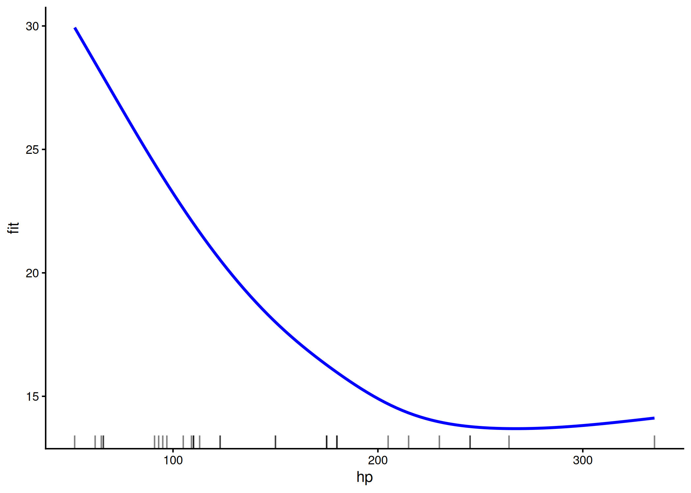
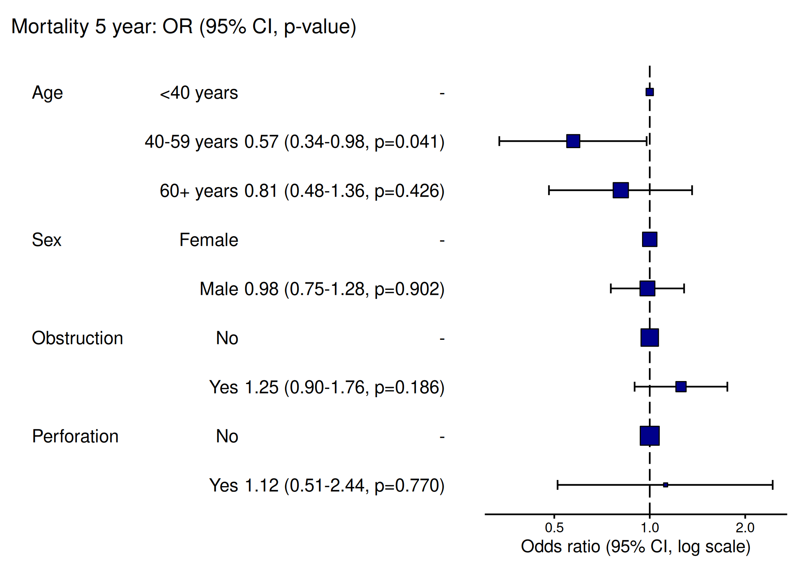
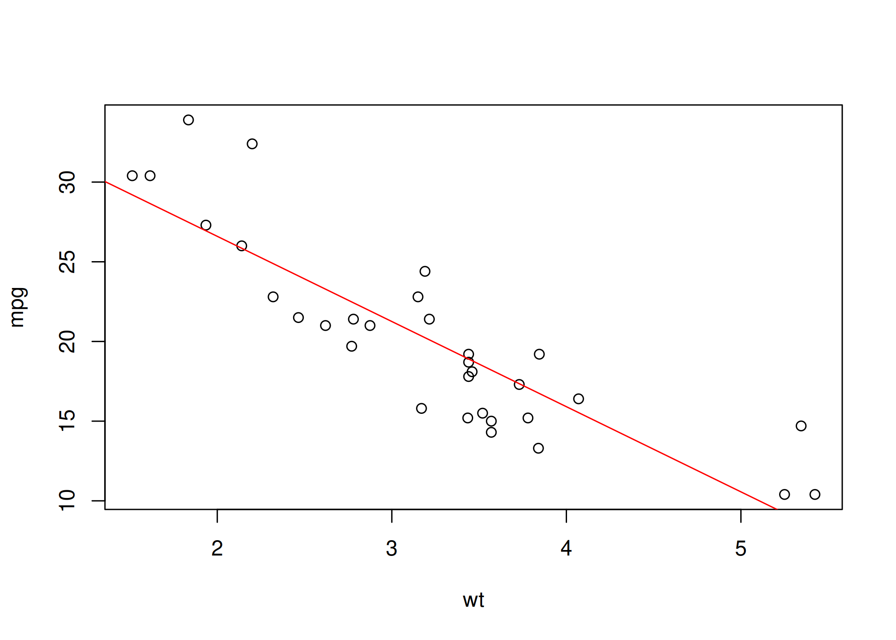
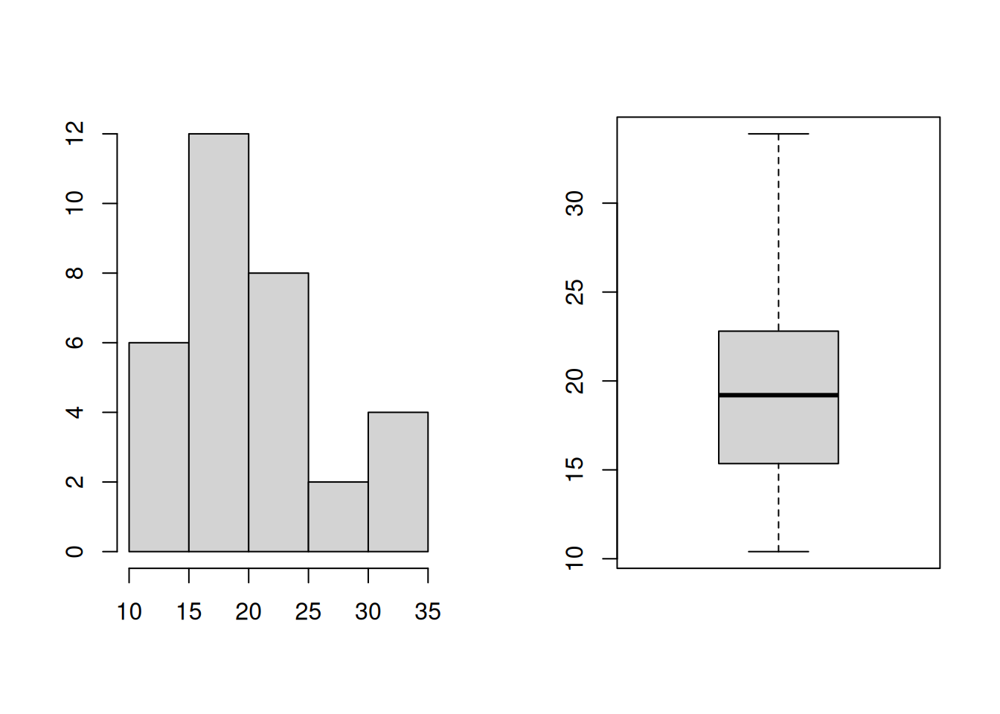
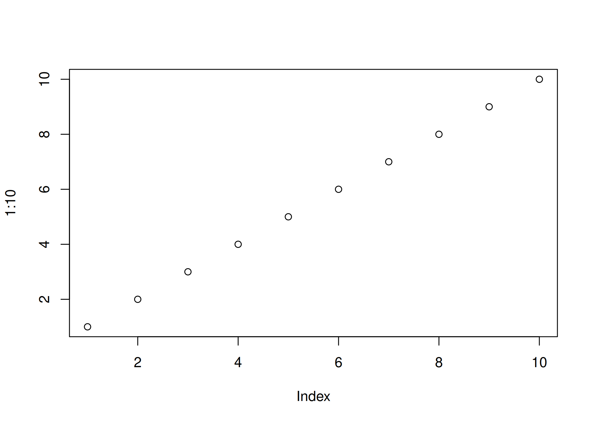
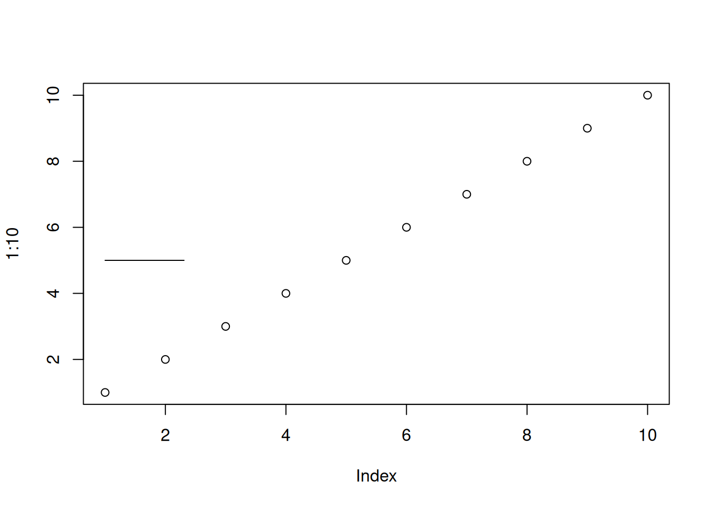

Código
round(mean(subset(dados, valor > 10)$valor, na.rm = TRUE), 2)A leitura desta seção é fundamental para compreender a base computacional deste material. Utilizamos o ambiente R/RStudio em todas as análises aqui apresentadas.
Ainda que existam alternativas no mercado como Python, SPSS, julia, Jamovi, Excel, etc. A escolha pelo R para o ensino de Estatística (especialmente a Espacial) é deliberada. Além de ser um software gratuito, de código livre (open source) e criado para computação estatística e gráfica, o R destaca-se pela vasta biblioteca de pacotes dedicados à fronteira do conhecimento científico.
A elaboração deste conteúdo é fruto da prática do autor, alicerçada na literatura fundamental da comunidade R. Recomendamos a leitura complementar das seguintes obras base: Paradis (2005), Venables, Smith, e R Core Team (2015), Wickham, Çetinkaya-Rundel, e Grolemund (2023), Wickham (2016) e Wickham (2019), entre outras.
Uma distinção fundamental para quem está começando:
R: é uma linguagem de programação e um ambiente de software livre usado para analisar dados, criar gráficos e aplicar métodos estatísticos. Foi criado por Ross Ihaka e Robert Gentleman na Universidade de Auckland, Nova Zelândia, em 1993, inspirado na linguagem S. Hoje, é muito utilizado por estatísticos, cientistas de dados e pesquisadores em várias áreas, contando com uma grande comunidade que desenvolve pacotes e amplia suas funcionalidades.
RStudio: é um programa que facilita o uso do R. Ele oferece uma interface gráfica amigável, onde o usuário pode escrever e executar códigos, visualizar gráficos, organizar arquivos e acompanhar os objetos criados durante a análise. É um Ambiente de Desenvolvimento Integrado (IDE), ou seja, um espaço que reúne várias ferramentas para programar de forma mais prática e organizada. O RStudio foi desenvolvido pela empresa RStudio, PBC (atualmente Posit Software, PBC), fundada por Joseph J. Allaire, e teve sua primeira versão lançada em 2011.
O RStudio divide-se em quatro painéis principais que você deve conhecer (Figura 1.1):
Source Editor (Editor de Fonte): Onde você escreve seus scripts (.R) e relatórios em Rmarkdown (.Rmd) ou Quarto (.qmd). É aqui que o código é salvo.
Console: Onde o código é executado interativamente e os resultados de texto aparecem imediatamente.
Environment (Ambiente): Mostra todos os objetos (dados, variáveis, funções) carregados na memória RAM (Workspace).
Files/Plots/Help: Área multifuncional para gerenciamento de arquivos, visualização de gráficos e consulta de documentação.
Para usar o RStudio, você deve primeiro instalar o R.
Passo 1: Instalar o R
Assista ao vídeo 1 da Professora Fernanda Peres: Clique aqui para ver o vídeo.
Passo 2: Instalar o RStudio

Assim que instalar o R e o RStudio, sempre que quiser fazer análises, use o RStudio clicando nele duas vezes. Se não encontrar o RStudio na área de trabalho, pesquise por Rstu em uma das opções abaixo (1 ou 2) mostradas na Figura 1.4.

Ctrl+Enter (no sistema operacional Windows) / Cmd+Enter (no Mac): Executa a linha de código atual.Alt+-: Insere o operador de atribuição (<-).Ctrl+Shift+M: Insere o operador Pipe (%>% ou |>).%>% ou |>)
O Pipe transfere o resultado da expressão à esquerda para ser o primeiro argumento da função à direita, transformando a difícil leitura matemática aninhada \(f(g(x))\) em uma sequência linear lógica \(x \to g \to f\). Ele é fundamental para a higiene do código, permitindo ler o script como uma receita (“pegue os dados, e então filtre, e então calcule”), eliminando o excesso de parênteses e variáveis temporárias.
subset) para filtrar os dados, depois expanda o olhar para calcular a média (mean) desse resultado, e finalmente olhe para as extremidades para aplicar o arredondamento (round) com o argumento 2 que está longe do início.round(mean(subset(dados, valor > 10)$valor, na.rm = TRUE), 2)dados, e então filtre onde valor > 10, e então calcule a média, e então arredonde o resultado final para 2 casas, seguindo a ordem lógica e cronológica da execução.dados |>
subset(valor > 10) |>
mean(na.rm = TRUE) |>
round(2)Esc: Interrompe um comando que está demorando muito ou travou.Ctrl+Shift+F10: Reinicia a sessão do R (limpa a memória RAM).Ctrl + Shift + C: Comentar/ignorar algo no Windows/LinuxCmd + Shift + C: Comentar/ignorar algo no MacAlém de Ctrl + Shift + C ou Cmd + Shift + C, você também pode usar o caractere # para instruir o R a ignorar completamente tudo o que estiver escrito à direita dele na mesma linha. Isso serve para deixar anotações para você mesmo (ou outros programadores) sem interferir na execução do código.
x <- 10
# x <- 20 <-- Esta linha não vai rodar, o valor continua 10.
y <- x + 5A Filosofia do objeto
No R, você raramente verá uma tela cheia de resultados imediatos após uma análise complexa. O R opera salvando resultados em objetos. Se você roda uma regressão linear, o resultado não é apenas um texto impresso, mas um objeto complexo que pode ser consultado, manipulado e usado como entrada para outras funções posteriormente.
Antes de algoritmos complexos, você precisa entender como o R processa informações básicas.
O R possui um sistema de documentação robusto integrado. Aprenda a pedir ajuda:
help(topic): Abre a documentação completa e técnica sobre o tópico especificado. Exemplo, se você quiser saber o que a função str() faz, faça help(str)help(str) ?topic: Um atalho rápido para o comando acima (ex: ?mean).?str help.search("termo") ou ??termo: Pesquisa o termo em todo o sistema de ajuda (títulos e descrições), útil quando você não sabe o nome exato da função (ex: ??regression).help.search("str")apropos("termo"): Retorna uma lista com os nomes de todos os objetos e funções disponíveis no ambiente atual que contêm o termo (ex: apropos("test")).apropos("str") #descomentehelp.start(): Inicia a versão HTML completa da ajuda no seu navegador padrão.help.start() #descomenteAtribuição
O R diferencia letras maiúsculas de minúsculas. Isso vale para nomes de funções, variáveis e também para caminhos de arquivos e pastas no seu computador.
<-: Atribuição à esquerda. É a convenção padrão e histórica do R. Cria uma variável. Se eu quisesse criar um objeto de nome “Alex”, recebendo número 4, temos:Alex <- 4=: Atribuição à esquerda. Funciona, mas é preferível usar apenas para definir argumentos dentro de funções.Alex = 4<<-: Superatribuição. Atribui um valor a uma variável no ambiente pai (global), geralmente usado dentro de funções avançadas para alterar variáveis externas.total <- 100 # Variável definida no ambiente global
# Função com atribuição normal (<-)
teste_local <- function() {
total <- 50 # Cria uma nova variável LOCAL chamada 'total'. A global continua 100.
}
# Função com superatribuição (<<-)
teste_global <- function() {
total <<- 50 # Altera a variável 'total' que já existe lá fora.
}
# Executando:
teste_local()
print(total) # Resultado: 100 (não mudou)[1] 100teste_global()
print(total) # Resultado: 50 (foi alterada pela superatribuição)[1] 50Operações Aritméticas * +, -, *, /: Soma, Subtração, Multiplicação e Divisão.
2 + 4 # Soma[1] 62 - 4 # Subtração[1] -22 * 4 # Multiplicação[1] 82 / 4 # Divisão[1] 0.5^ ou **: Exponenciação (potência).^ é o mais comum no R, mas ** também funciona).
2 ^ 3 # 2 elevado a 3 = 2x2x2= 8[1] 8%%: Módulo (Resto da divisão). Útil para verificar paridade ou ciclos.5 %% 2 # Retorna 1 (pois 5 dividido por 2 dá 2 e sobra 1)[1] 1%/%: Divisão inteira (Quociente). Descarta a parte decimal.5 %/% 2 # Retorna 2 (a parte inteira da divisão)[1] 2Se você executar uma operação sem atribuí-la a um objeto (usando <- ou =), o R apenas imprime o resultado no console e o descarta imediatamente. Ele não fica salvo na memória.
Exemplo: Ao rodar apenas 2 + 4, você vê 6 na tela, mas não consegue usar esse 6 em contas futuras. Solução: use sempre nome_do_objeto_da_sua_preferência <- 2 + 4
Sobrescrita de Variáveis: O R não guarda o histórico de uma variável. Se você atribuir um novo valor a um objeto que já existe, o valor antigo é apagado e substituído pelo novo (a última operação prevalece).
b <- 10 # 'b' vale 10
b <- 2 + 4 # Agora 'b' vale 6. O 10 foi perdido.Lógica e Comparação
Resultam sempre em TRUE ou FALSE. * ==, !=: Igualdade exata e Diferença.
10 == 10 # TRUE (10 é igual a 10)[1] TRUE10 != 10 # FALSE (10 não é diferente de 10)[1] FALSE"R" == "Python" # FALSE[1] FALSE<, >, <=, >=: Menor, Maior, Menor ou igual, Maior ou igual.5 > 3 # TRUE[1] TRUE5 <= 2 # FALSE[1] FALSEx <- 10
x >= 10 # TRUE[1] TRUE!: Negação (NÃO). Inverte o valor lógico (!TRUE é FALSE).!TRUE # Retorna FALSE[1] FALSE!(5 > 3) # 5 > 3 é TRUE, logo a negação retorna FALSE[1] FALSEis.na(4) # Verifica se é Nulo (FALSE)[1] FALSE!is.na(4) # "Não é nulo" (TRUE)[1] TRUE&, |: “E” / “OU” vetorizados. Comparam elemento por elemento de dois vetores.v1 <- c(TRUE, TRUE, FALSE)
v2 <- c(FALSE, TRUE, FALSE)
v1 & v2 # Retorna: FALSE TRUE FALSE (Apenas a 2ª posição tem TRUE nos dois)[1] FALSE TRUE FALSEv1 | v2 # Retorna: TRUE TRUE FALSE (Basta um ser TRUE)[1] TRUE TRUE FALSE&&, ||: “E” / “OU” de controle. Avaliam apenas o primeiro elemento.x <- 10
y <- 3
divisao_inteira <- x %/% y
resto <- x %% y
logica <- (x > 5) & (y < 5) # TRUE E TRUE = TRUEUsados exclusivamente em estruturas de controle como if.
tem_saldo <- TRUE
conta_ativa <- TRUE
if (tem_saldo && conta_ativa) {
print("Compra aprovada")
}[1] "Compra aprovada"Não existem escalares (números soltos) no R. Um número sozinho é, na verdade, um vetor de comprimento 1. Saiba mais sobre vetores clicando aqui
Criação
c(...): Função “combine” ou “concatenate”. Junta elementos num mesmo vetor.números <- c(10, 20, 30) # Vetor numérico
nomes <- c("Ana", "Beto", "Carla") # Vetor de texto
misturado <- c(10, "Ana") # Resultado: "10", "Ana" (Tudo vira texto)O c é Minúsculo
from:to: Gera uma sequência de inteiros (ex: 1:10).1:5 # Retorna: 1 2 3 4 5[1] 1 2 3 4 55:1 # Retorna: 5 4 3 2 1[1] 5 4 3 2 1seq(from, to, by, length): Gera sequências complexas. Permite definir o passo (by) ou o tamanho final desejado (length).# Sequência de 0 a 10, pulando de 2 em 2
seq(from = 0, to = 10, by = 2) # Resultado: 0 2 4 6 8 10[1] 0 2 4 6 8 10# Quero exatos 5 números entre 0 e 10
seq(from = 0, to = 10, length.out = 5)# Resultado: 0.0 2.5 5.0 7.5 10.0[1] 0.0 2.5 5.0 7.5 10.0rep(x, times, each): Replica elementos. times repete o vetor todo; each repete cada elemento individualmente.vetor <- c(1, 2)
rep(vetor, times = 3) # Resulta em: 1, 2, 1, 2, 1, 2[1] 1 2 1 2 1 2rep(vetor, each = 3) # Resulta em: 1, 1, 1, 2, 2, 2[1] 1 1 1 2 2 2%in%: Verifica se um valor está dentro de um vetor e retornaTRUEouFALSE`1 %in% vetor # 1 está dentro do objeto vetor?[1] TRUEc()NULLA Regra da reciclagem
O superpoder do R é a vetorização. Se você tentar operar dois vetores de tamanhos diferentes, o R “recicla” (repete) o vetor menor até que ele tenha o tamanho do maior.
valores <- c(10, 20, 30, 40)
pesos <- c(1, 2)
resultado <- valores * pesos # O que acontece internamente: 10*1, 20*2, 30*1, 40*2
print(resultado)[1] 10 40 30 80O R possui termos específicos para lidar com exceções matemáticas e dados faltantes. É crucial saber diferenciá-los.
NA: Not Available. Representa um dado ausente ou desconhecido. O NA é “contagioso”. A maioria das operações matemáticas envolvendo um NA resultará em NA (pois não se pode somar algo a um valor desconhecido).Nunca use == para testar se algo é NA (ex: x == NA retorna NA, e não TRUE ou FALSE). Use sempre a função is.na().
vetor <- c(1, 2, NA, 4)
mean(vetor) # Retorna NA (a média de dados desconhecidos é desconhecida)[1] NAis.na(vetor) # Retorna: FALSE FALSE TRUE FALSE[1] FALSE FALSE TRUE FALSENaN: Not a Number. Resultado de uma indeterminação matemática. Ocorre quando o cálculo é impossível de ser definido numericamente. Resultado de indeterminações matemáticas (ex: 0/0).0 / 0 # Retorna NaN[1] NaNInf: Infinito (ex: 1/0).10 / 0 # Retorna Inf[1] Inf-5 / 0 # Retorna -Inf[1] -InfNULL: Vazio. Representa a ausência total de conteúdo. Diferente do NA (que é um “espaço reservado para um dado que falta”), o NULL significa que a estrutura ou vetor nem sequer existe naquele ponto. É muito usado para apagar elementos de listas.x <- NULL # O objeto x existe, mas é vazio (tamanho 0).
c(1, 2, NULL, 3) # Resultado: 1, 2, 3 (O NULL é ignorado na concatenação)[1] 1 2 3No R, é fundamental saber qual é o tipo do objeto (classe) com o qual você está lidando. Estas famílias de funções permitem testar ou alterar esses tipos.
Funções as... (Conversão / Coerção Explícita)
Estas funções tentam forçar a transformação de um objeto de um tipo para outro.
as.numeric(), as.character(), as.logical(), as.factor(): Forçam a conversão de um tipo para outro.# Convertendo Número para Texto
as.character(123) # Resultado: "123" (Note as aspas)[1] "123"# Convertendo Texto para Número
as.numeric("10.5") # Resultado: 10.5[1] 10.5as.numeric("Bola") # Resultado: NA ("NAs introduzidos por coerção")[1] NAUma técnica muito comum é converter TRUE e FALSE em números para fazer contagens. TRUE vira 1 e FALSE vira 0.
as.numeric(TRUE) # Retorna 1[1] 1as.numeric(FALSE) # Retorna 0[1] 0Funções is... (Verificação / Teste lógico)
Estas funções fazem uma pergunta ao objeto e retornam sempre TRUE ou FALSE. São ideais para usar dentro de condicionais (if).
is.numeric(), is.character(), etc.: Verificam se o objeto é do tipo especificado.x <- 10
y <- "10"
is.numeric(x) # TRUE (É um número)[1] TRUEis.numeric(y) # FALSE (É um texto, apesar de conter dígitos)[1] FALSEis.character(y) # TRUE[1] TRUESaber onde o R está salvando seus arquivos (diretório de trabalho) e como limpar a memória é essencial para a organização.
Diretório de trabalho
É a pasta no seu computador onde o R irá ler e salvar arquivos (como .csv ou .xlsx) por padrão.
getwd() (Get Working Directory): Descobre em qual pasta você está trabalhando agora.getwd() # Exemplo de saída: /home/almonha/curso-de-verao-notas-de-aulas"setwd() (Set Working Directory): Muda o diretório de trabalho para outra pasta.setwd("C:/Users/Alex/Curso_verao")Se usarsetwd("C:/Users/SeuNome/..."), seu código não será reprodutível. Se você enviar esse script para outra pessoa, o código quebrará, pois o computador dele não tem a pasta “SeuNome”, isto é, usam diretórios diferentes.
A solução profissional é trabalhar com R Projects (.Rproj).
Criação de projeto
RStudio: File > New Project > New Directory.here para referenciar arquivos. Ele encontra automaticamente a raiz do projeto, independente de qual subpasta você esteja. Isto é, se rodar o código:dados <- read.csv(here("dados", "tabela.csv")), o computador entende: Na raiz do projeto, entre na pasta dados, leia tabela.csv, ou seja, esta é a forma ideal e universal de ler arquivos.
No Windows, o caminho copiado usa contrabarra (\), mas no R você deve usar barra normal (/) ou barra dupla (\\).
setwd("C:/Users/SeuNome/Projetos/Analise_Dados")setwd("C:\Users\SeuNome\Projetos\Analise_Dados")Gerenciando objetos na memória
Conforme você cria variáveis (x, y, dados), elas ocupam a memória RAM (o Environment).
ls() (Listar): Mostra os nomes de todos os objetos criados no ambiente atual.ls()rm() (Remover): Apaga objetos da memória para liberar espaço ou evitar confusão.rm(nome_do_objeto_a_remover)rm(list = ls())rm(list = ls())gc(): (Garbage Collection) Força o sistema a liberar memória RAM que não está mais sendo usada. Essencial ao trabalhar com Big Data.gc()if (!require("pacman")) install.packages("pacman")
pacman::p_load(tidyverse, janitor,flextable)
df_sujo <- data.frame(
'Nome do Aluno' = c("Ana", "Beto"),
'NOTA FINAL' = c(9, 8),
check.names = FALSE
)
df_limpo <- df_sujo %>%
janitor::clean_names() # Transforma tudo em: nome_do_aluno, nota_final
names(df_limpo)[1] "nome_do_aluno" "nota_final" O R base vem apenas com as funcionalidades essenciais. Para fazer análises avançadas, precisamos instalar pacotes (conjuntos de funções extras criadas pela comunidade). Pense no R como um celular novo: ele vem com funções de fábrica (ligar, agenda), mas para usar o Instagram ou WhatsApp, você precisa instalar os Apps (Pacotes).
Instalação (install.packages)
Você faz isso apenas uma vez por computador (como baixar o App da loja).
install.packages("tidyverse")
install.packages("ggplot2")Note que o nome do pacote deve estar entre aspas
Carregamento (library(.) ou require(.))
Você deve fazer isso toda vez que abrir o RStudio ou iniciar uma nova sessão (como abrir o App para usar). Note que aqui não precisa de aspas.
library(tidyverse)Coloque todos os library() ou require() necessários nas primeiras linhas do seu script.
Para evitar deixar seu script cheio de install.packages(".") e library(.) , onde . é pacote, use o código abaixo comando que permite instalar e carregar os pacotes simultaneamente.
# O comando que segue diz: se não carregar o pacote pacman instale-o
if (!require("pacman")) install.packages("pacman")
#O comando abaixo instala os pacotes se não estão instalados e carrega-os
pacman::p_load(tidyverse, flextable)Além de vetores, o R organiza dados em estruturas mais complexas.
Indexação e Seleção (Subsetting)
No R, utilizamos colchetes [ ] para acessar, extrair ou modificar pedaços específicos dos dados.
Vetores:
x <- c(10, 20, 30, 40, 50)
names(x) <- c("Ana", "Beto", "Carla", "Davi", "Eva")x[n]: Seleciona o elemento na posição n.x[2] # Retorna 20 (o segundo elemento)Beto
20 x[-n]: Seleciona tudo exceto o elemento na posição n.x[-2] # Retorna: 10, 30, 40, 50 (O 20 foi removido) Ana Carla Davi Eva
10 30 40 50 x[1:n]: Seleciona uma sequência de posições.x[2:4] # Retorna: 20, 30, 40 (Da 2ª à 4ª posição) Beto Carla Davi
20 30 40 x[c(1,4)]: Seleciona posições específicas não sequenciais.x[c(1, 5)] # Retorna: 10, 50 (O primeiro e o último)Ana Eva
10 50 x[x > 3]: Seleção lógica (filtro). Retorna elementos que satisfazem a condição (TRUE). Isto é, O R testa cada elemento. Onde for TRUE, ele mantém; onde for FALSE, ele descarta.x[x > 30] # Resultado: 40, 50Davi Eva
40 50 x["nome"]: Seleciona pelo nome, se o vetor tiver o atributo names.x["Carla"] # Retorna 30Carla
30 x[c("Ana", "Eva")] # Retorna 10 e 50Ana Eva
10 50 Listas: Diferente dos vetores (que só aceitam um tipo de dado), as listas são a estrutura mais flexível do R. Elas podem conter qualquer coisa: números, textos, vetores, data frames e até outras listas.
aluno <- list(
nome = "Mariana",
notas = c(9.5, 8.0, 7.5),
ativo = TRUE
)lista[n]: Retorna uma nova lista contendo apenas o elemento n. (Pense: pega a gaveta inteira).x <- aluno[2]
# O que é 'x'? É uma LISTA contendo as notas.
class(x) # Resultado: "list"[1] "list"lista[[n]]: Extrai o conteúdo do objeto na posição n. (Pense: tira o objeto da gaveta).y <- aluno[[2]]
# O que é 'y'? É um VETOR numérico (as notas em si).
class(y) # Resultado: "numeric"[1] "numeric"mean(y) # Funciona (média das notas).[1] 8.333333# mean(x) daria erro, pois não se calcula média de uma "lista".lista$nome: É a forma mais comum e legível de usar o [[...]]. Extrai o conteúdo diretamente usando o nome atribuído ao elemento.aluno$nome # Retorna: "Mariana"[1] "Mariana"aluno$notas # Retorna: 9.5 8.0 7.5[1] 9.5 8.0 7.5Matrizes e Data Frames
Diferente dos vetores, aqui lidamos com duas dimensões. A regra de ouro no R é sempre: [ LINHA , COLUNA ].
dados <- data.frame(
Nome = c("Ana", "Beto", "Carla"),
Idade = c(22, 30, 25),
Nota = c(8, 7, 9)
)df[i, j]: Elemento na linha i, coluna j.dados[1, 2] # Linha 1 ("Ana"), Coluna 2 ("Idade") -> Retorna 22[1] 22df[i, ]: Seleciona toda a linha i.dados[2, ]# Retorna todos os dados do "Beto"df[, j]: Seleciona toda a coluna j.dados[, 2]# Retorna o vetor: 22 30 25[1] 22 30 25df$coluna: Seleciona a coluna pelo nome (específico para Data Frames e Listas). Note que este não funciona em matrizes.dados$Nome #seleciona a coluna "Nome"Matrizes e Arrays
Matrizes são vetores com duas dimensões (linhas e colunas). Todos os dados devem ser do mesmo tipo (ex: tudo numérico).
matrix(data, nrow, ncol): Cria a matriz de nrow linhas e ncol colunas. O preenchimento padrão é por coluna. Use byrow=TRUE para preencher por linha.M <- matrix(1:6, nrow = 2, ncol = 3, byrow = TRUE);M [,1] [,2] [,3]
[1,] 1 2 3
[2,] 4 5 6t(x): Transposta (inverte linhas por colunas).M_t <- t(M);M_t [,1] [,2]
[1,] 1 4
[2,] 2 5
[3,] 3 6%*%: O operador para multiplicação matricial real (diferente de * que multiplica elemento por elemento).M_mult <- M %*% M_t; M_mult [,1] [,2]
[1,] 14 32
[2,] 32 77solve(A, b): Resolve sistemas lineares \(Ax = b\). Se b for omitido, inverte a matriz A.A <- matrix(c(4, 2, 7, 6), nrow = 2)
A_inv <- solve(A) # Inversa de A#SISTEMA DE EQUAÇÕES: Ax=b
# 3x + 2y = 5
# 1x + 4y = 10
A <- matrix(c(3, 1, 2, 4), nrow = 2)
b <- c(5, 10)
#RESOLVENDO-O
resultado_x <- solve(A, b)
print(resultado_x) [1] 0.0 2.5Enquanto matrizes são estritamente bidimensionais (linhas e colunas), arrays são estruturas de dados n-dimensionais. Pense em um array 3D como um cubo de dados ou uma pilha de matrizes. Eles são fundamentais em estatística espacial (x, y, tempo) ou em imagens (x, y, canais de cor).
array(data, dim): O argumento dim é um vetor que define o tamanho de cada dimensão c(linhas, colunas, profundidade/camadas, ...).# Imagine que são dados de temperatura de 2 cidades, em 3 meses, por 2 anos.
meu_array <- array(data = 1:12, dim = c(2, 3, 2))
print(meu_array), , 1
[,1] [,2] [,3]
[1,] 1 3 5
[2,] 2 4 6
, , 2
[,1] [,2] [,3]
[1,] 7 9 11
[2,] 8 10 12dim(meu_array) # Retorna 2 3 2[1] 2 3 2Data Frames
É a estrutura mais importante para Ciência de Dados. Pense nele como uma planilha de Excel: colunas podem ter tipos diferentes (texto, números, datas), mas todas devem ter o mesmo comprimento (número de linhas) ( Tabela 1.1).
data.frame(...): Cria um data frame manualmente.pacman::p_load(gt)
df <- data.frame(
id = 1:3,
nome = c("Ana", "Beto", "Carla"),
nota = c(8.5, 9.0, 7.5)
)
df |>
gt()| id | nome | nota |
|---|---|---|
| 1 | Ana | 8.5 |
| 2 | Beto | 9.0 |
| 3 | Carla | 7.5 |
head(df), tail(df): Mostra as primeiras/últimas linhas ( Tabela 1.2 ).# Tabela 1 (Esquerda)
head(df) |>
gt()
# Tabela 2 (Direita)
tail(df) |>
gt()| id | nome | nota |
|---|---|---|
| 1 | Ana | 8.5 |
| 2 | Beto | 9.0 |
| 3 | Carla | 7.5 |
| id | nome | nota |
|---|---|---|
| 1 | Ana | 8.5 |
| 2 | Beto | 9.0 |
| 3 | Carla | 7.5 |
nrow(df), ncol(df): Número de linhas e colunas.nrow(df) #número de linhas[1] 3ncol(df) #número de colunas[1] 3dim(df): Retorna dimensões (linhas, colunas).dim(df) #dimensão[1] 3 3str(df), glimpse(df): Mostra a estrutura interna (tipos de dados de cada coluna).str(df)'data.frame': 3 obs. of 3 variables:
$ id : int 1 2 3
$ nome: chr "Ana" "Beto" "Carla"
$ nota: num 8.5 9 7.5Essencial para depuração.
names(df): Retorna ou define os nomes das colunas.names(df)[1] "id" "nome" "nota"rbind(df1, df2): É usada quando você tem dados novos com a mesma estrutura (mesmas colunas) e quer adicioná-los aos antigos ( Tabela 1.3).pacman::p_load(gt,dplyr)
grupo_jan <- data.frame(
id = 1:2,
vendas = c(100, 150)
)
grupo_jan %>%
gt()
grupo_fev <- data.frame(
id = 3:4,
vendas = c(200, 120)
)
grupo_fev %>%
gt()
# Juntando (Bind de Linhas - Rows)
todos_dados <- rbind(grupo_jan, grupo_fev)
todos_dados %>%
gt()| id | vendas |
|---|---|
| 1 | 100 |
| 2 | 150 |
| id | vendas |
|---|---|
| 3 | 200 |
| 4 | 120 |
| id | vendas |
|---|---|
| 1 | 100 |
| 2 | 150 |
| 3 | 200 |
| 4 | 120 |
Os nomes das colunas devem ser exatamente iguais e estar na mesma ordem (embora data frames modernos tentem alinhar por nome, é boa prática garantir a ordem).
cbind(df1, df2): Esta função cola/junta dois data frames lado a lado. É uma colagem cega baseada na posição. Ela cola a linha 1 do df1 com a linha 1 do df2 ( Tabela 1.4).library(gt)
library(dplyr) # Necessário se usar o pipe %>%
df_nomes <- data.frame(nome = c("Ana", "Beto", "Carla"))
df_nomes %>%
gt()
df_idades <- data.frame(idade = c(25, 30, 22))
df_idades %>%
gt()
# Colando lado a lado e exibindo
df_completo <- cbind(df_nomes, df_idades)
df_completo %>%
gt()| nome |
|---|
| Ana |
| Beto |
| Carla |
| idade |
|---|
| 25 |
| 30 |
| 22 |
| nome | idade |
|---|---|
| Ana | 25 |
| Beto | 30 |
| Carla | 22 |
Se a ordem das linhas estiver diferente (ex: o usuário 1 está na primeira linha da tabela A, mas o usuário 5 está na primeira linha da tabela B), seus dados ficarão corrompidos. Use apenas quando tiver certeza absoluta que a ordem das linhas é idêntica.
merge(x, y): Diferente do cbind, o merge ( Tabela 1.5) não depende da ordem das linhas. Ele procura uma coluna chave (ID, CPF, Código) comum entre as duas tabelas e alinha as informações corretamente. Os parâmetros importantes são, by = coluna_chave, a coluna usada para fazer o cruzamento; all = TRUE, que mantém todas as linhas (Full Outer Join) e all.x = TRUE que mantém todas as linhas da tabela da esquerda (Left Join).funcionarios <- data.frame(
id = c(3, 1, 2),
nome = c("Carlos", "Ana", "Bia")
)
funcionarios %>%
gt()
salarios <- data.frame(
id = c(1, 2, 3),
salario = c(5000, 6000, 5500)
)
salarios %>%
gt()
# O merge procura o 'id' igual e alinha as linhas corretamente
fusao <- merge(x = funcionarios, y = salarios, by = "id")
fusao %>%
gt()| id | nome |
|---|---|
| 3 | Carlos |
| 1 | Ana |
| 2 | Bia |
| id | salario |
|---|---|
| 1 | 5000 |
| 2 | 6000 |
| 3 | 5500 |
| id | nome | salario |
|---|---|---|
| 1 | Ana | 5000 |
| 2 | Bia | 6000 |
| 3 | Carlos | 5500 |
summary(df): Resumo estatístico básico.summary(fusao) id nome salario
Min. :1.0 Length:3 Min. :5000
1st Qu.:1.5 Class :character 1st Qu.:5250
Median :2.0 Mode :character Median :5500
Mean :2.0 Mean :5500
3rd Qu.:2.5 3rd Qu.:5750
Max. :3.0 Max. :6000 Fatores
Fatores são usados para variáveis categóricas (qualitativas). O R armazena internamente como números inteiros (1,2,3…), mas exibe rótulos (labels). A ordem dos níveis (levels) é crucial para a ordem em gráficos.
factor(x, levels, ordered): Cria um fator. Definir levels é crucial para fixar a ordem das categorias (ex: em gráficos ou modelos).sexo <- c("M", "F", "F", "M") # Cria um vetor de texto
fator_sexo <- factor(sexo, levels = c("F", "M")) # Converte para fatorImportação e Exportação
Para analisar os dados primeiro deve ler (importar) eles para o R/Rstudio. O pacote readr (do Tidyverse) é preferível ao R base por ser mais rápido e não converter texto em fator automaticamente.
Pacote readr (Tidyverse - Moderno e Rápido):
read_csv("arquivo.csv"): Lê arquivos separados por vírgula.read_csv2("arquivo.csv"): Lê arquivos separados por ponto e vírgula (comum no Brasil/Europa onde a vírgula é decimal).read_delim("arquivo.txt", delim = "|"): Lê arquivos com delimitadores personalizados.write_csv(x, "arquivo.csv"): Salva um data frame em disco.pacman::p_load(readxl)
dados <- read_csv2("dados_brasil.csv")
write_csv(dados, "dados_limpos.csv")
# Para Excel (requer pacote extra)
dados_excel <- read_excel("planilha.xlsx", sheet = "Aba1")Base R (Clássico):
read.table("arquivo.txt"): A função base mais flexível e genérica para importar dados tabulares de arquivos de texto, permitindo controle total sobre todos os parâmetros (separadores, decimais, cabeçalhos). Utilize quando o arquivo de dados não segue padrões comuns (como CSV padrão) ou quando você precisa especificar manualmente como o R deve interpretar o arquivo.# Lê arquivo separado por tabulação ('\t') com cabeçalho
dados <- read.table("dados.txt", header = TRUE, sep = "\t")read.csv(): Um “wrapper” (atalho) do read.table pré-configurado especificamente para arquivos separados por vírgula (padrão internacional). Utilize para a leitura rápida de arquivos .csv padrão sem precisar configurar parâmetros extras.vendas <- read.csv("vendas_2024.csv")
dados <- readr::read_csv("https://raw.githubusercontent.com/mwaskom/seaborn-data/master/iris.csv") #usando linkNo Português se usa vírgula (,) para decimal e acentos (Latin1/ISO-8859-1). O padrão mundial é ponto (.) para decimal e UTF-8.
use read_csv(): Espera separador vírgula (padrão US).
Use read_csv2(): Espera separador ponto-e-vírgula (padrão BR).
Se seus textos (nomes de cidades) aparecerem com símbolos estranhos (São Paulo), force o encoding
pacman::p_load(readr)
dados <- read_csv2("dados_br.csv", locale = locale(encoding = "Latin1"))write_csv(): Salva data frames em arquivo CSV de forma mais rápida e moderna que o write.csv base. Utilize sempre que precisar exportar dados processados para CSV, pois ele não escreve nomes de linhas (row names) por padrão e lida melhor com caracteres especiais.# Salva o arquivo sem criar aquela coluna de índice numérico (1, 2, 3...)
readr::write_csv(iris, "iris_limpo.csv")scan(): Leitura primitiva e/ou função de baixo nível que lê dados sequencialmente e os converte em vetores ou listas, em vez de data frames. Utilize para ler arquivos com estrutura irregular, para colar dados copiados diretamente no console ou quando read.table falha devido a inconsistências no arquivo.# Lê números de um arquivo diretamente para um vetor numérico
vetor_números <- scan("números.txt", what = numeric())save(obj, file="dados.RData"): Salva um ou mais objetos R específicos (variáveis, modelos, data frames) que estão no Environment em um arquivo binário compactado (.RData), preservando tipos e classes. Utilize para salvar resultados intermediários importantes (ex: ajustou um modelo que levou muito tempo e não quer voltar ajustar novamente) para uso futuro, sem salvar o “lixo” do ambiente de trabalho inteiro.# Você ajustou um modelo e chamou-o de fit
# O codigo abaixo salva apenas o dataframe 'dados' e o modelo 'fit' que estão no Environment
save(dados, fit, file = "resultados_parciais.RData")load("dados.RData"): Carrega objetos salvos em arquivos .RData diretamente para a memória do R, mantendo os nomes originais dos objetos. Utilize para retomar análises carregando dados pré-processados ou modelos salvos, economizando o tempo de rodar scripts novamente.load("resultados_parciais.RData")save.image(): Um atalho que salva todos os objetos presentes no seu ambiente de trabalho (Workspace) atual em um único arquivo. Utilize ao encerrar uma sessão de trabalho complexa para garantir que você possa continuar exatamente de onde parou (geralmente salva como .RData).save.image(file = "backup_projeto_tarde.RData")Excel e Google Sheets:
readxl::read_excel("arq.xlsx", sheet = 1): A função mais robusta e eficiente para importar dados de arquivos Microsoft Excel (.xls e .xlsx) sem depender de instalações externas complexas (como Java). Utilize para carregar dados armazenados localmente em arquivos Excel, permitindo especificar qual aba (sheet) deve ser lida pelo nome ou índice.tabela <- readxl::read_excel("relatorio_anual.xlsx", sheet = "Dados_Brutos")googlesheets4::read_sheet("URL"): Função que conecta diretamente à API do Google para baixar e importar dados de planilhas hospedadas na nuvem (Google Drive), gerenciando a autenticação do usuário. Utilize para acessar dados diretamente pela URL ou ID da planilha, eliminando a necessidade de baixar o arquivo manualmente antes de ler.dados_online <- googlesheets4::read_sheet("https://docs.google.com/spreadsheets/d/...")Ler dados de alta dimensão (Big Data)
read_parquet(): Lê arquivos no formato Parquet do pacote arrow, um formato de armazenamento colunar altamente comprimido e eficiente, amplamente usado em Big Data. Utilize para importar grandes volumes de dados (milhões de linhas) com extrema rapidez e baixo uso de memória.dados_gigantes <- read_parquet("dados_grandes.parquet")write_parquet(): Salva um data frame ou tibble no formato Parquet. Utilize para armazenar dados processados ocupando muito menos espaço em disco que um CSV e permitindo leituras futuras muito mais rápidas.write_parquet(iris, "iris_otimizado.parquet")saveRDS() salva um único objeto do R em um arquivo binário, sem salvar o nome original da variável. A melhor opção para salvar objetos individuais para ser carregado posteriormente com qualquer nome.# Vc ajustou modelo e pode salvar apenas o resultado final em um arquivo .rds
saveRDS(modelo_final, "meu_modelo.rds")readRDS(): Lê um arquivo .rds e retorna o objeto salvo, exigindo que você o atribua a uma nova variável. Utilize para carregar objetos salvos com saveRDS. Diferente de load(), ele não suja seu ambiente com nomes variáveis desconhecidos; você escolhe o nome.# Carrega o modelo salvo atribuindo a uma nova variável
modelo_carregado <- readRDS("meu_modelo.rds")dplyr (Tidyverse)O padrão ouro atual para manipulação de dados. Utiliza o operador pipe %>% para encadear ações de forma legível.
Algumas funções:
select(df, col1, col2): Seleciona colunas e mantém apenas as colunas selecionadas em um data frame. Utilize para reduzir o conjunto de dados, descartando variáveis irrelevantes para a análise atual ou para reordenar colunas.# Seleciona apenas as colunas Sepal.Length e Species
iris %>% select(Sepal.Length, Species)%>%
reactable( searchable = TRUE,
)filter(df, condicao): Filtra linhas baseado em condições lógicas. Utilize para extrair observações específicas, como “apenas vendas acima de 100” ou “apenas dados de 2024”.# Filtra apenas linhas da espécie setosa
iris %>% filter(Species == "setosa")%>%
reactable( sortable = TRUE,
resizable = TRUE,
filterable = TRUE,
searchable = TRUE)mutate(df, nova_col = x + y): Cria ou modifica colunas existentes preservando as demais. Utilize para criar cálculos (ex: conversão de unidades), transformar dados ou criar variáveis derivadas.# Cria uma nova coluna com a razão (divisão) entre sépala e pétala
iris %>% mutate(razao = Sepal.Length / Petal.Length)%>%
reactable( sortable = TRUE,
resizable = TRUE,
filterable = TRUE,
searchable = TRUE)arrange(df, col): Ordena as linhas. Use desc(col) para ordem decrescente. Utilize para classificar dados, como colocar os maiores valores no topo (desc()) ou ordenar alfabeticamente.# Ordena por Sepal.Length de forma decrescente
iris %>% arrange(desc(Sepal.Length))%>%
reactable()summarise(df, media = mean(x)): Reduz múltiplos valores a um único resumo estatístico (soma, média, contagem). Utilize, geralmente após um group_by, para obter métricas agregadas dos seus dados.# Calcula a média do comprimento das sépalas
iris %>% summarise(media_sepala = mean(Sepal.Length))%>%
gt()| media_sepala |
|---|
| 5.843333 |
group_by(df, categoria): Agrupa os dados. Utilize imediatamente antes de summarise ou mutate para aplicar a cada grupo separadamente.# Agrupa por espécie (preparação para cálculo subsequente)
iris %>% group_by(Species)%>%
reactable(filterable = TRUE,
searchable = TRUE,)rename(df, novo = velho): Renomeia colunas. Utilize para tornar nomes de variáveis mais legíveis ou compatíveis com padrões de código (novo_nome = velho_nome).# Renomeia Sepal.Length para comprimento_sepala
iris %>% rename(comprimento_sepala = Sepal.Length)%>%
reactable(filterable = TRUE,
searchable = TRUE,)relocate(df, col, .before = col2): Reordena a posição das colunas. Isto é, move colunas para novas posições dentro do data frame. Utilize para organizar a visualização, trazendo colunas importantes para o início (.before ou .after).# Move a coluna Species para antes de todas as outras
iris %>% relocate(Species, .before = everything())%>%
reactable()slice(df, n:m): Seleciona linhas baseando-se em suas posições (índices) inteiras. Utilize quando precisar de linhas específicas pela posição, como as 5 primeiras ou a última linha, independente dos valores ( Tabela 1.6).# Seleciona da linha 10 até a linha 15
iris %>% slice(10:15)%>%
gt()| Sepal.Length | Sepal.Width | Petal.Length | Petal.Width | Species |
|---|---|---|---|---|
| 4.9 | 3.1 | 1.5 | 0.1 | setosa |
| 5.4 | 3.7 | 1.5 | 0.2 | setosa |
| 4.8 | 3.4 | 1.6 | 0.2 | setosa |
| 4.8 | 3.0 | 1.4 | 0.1 | setosa |
| 4.3 | 3.0 | 1.1 | 0.1 | setosa |
| 5.8 | 4.0 | 1.2 | 0.2 | setosa |
recode(): Substitui valores específicos num vetor numérico ou de caracteres ( Tabela 1.7). Utilize dentro de um mutate para corrigir erros de digitação ou traduzir categorias específicas rapidamente (Substituído modernamente por case_match).# Renomeia "setosa" para "Setosa_Pura" na coluna Species
iris %>% mutate(Species = recode(Species, "setosa" = "Setosa_Pura"))%>%
reactable()across(): Função auxiliar que permite aplicar uma mesma transformação ou função de resumo a múltiplas colunas selecionadas simultaneamente. Utilize dentro de mutate() ou summarise() quando precisar repetir a mesma operação (ex: calcular média, converter tipo) em várias variáveis sem duplicar código ( Tabela 1.8).# Exemplo: Calcular a média apenas das colunas que começam com "Sepal"
iris %>%
summarise(across(starts_with("Sepal"), mean))%>%
gt()| Sepal.Length | Sepal.Width |
|---|---|
| 5.843333 | 3.057333 |
case_when(): Uma estrutura condicional vetorizada que permite criar ou modificar valores baseando-se em uma sequência de múltiplas condições lógicas (como vários if-else encadeados). Utilize para categorizar variáveis ou criar novas colunas baseadas em regras complexas, evitando o uso confuso de múltiplos ifelse() aninhados (Table Tabela 1.9).# Exemplo: Categorizar o tamanho da pétala em Pequena, Média, Grande
iris %>%
mutate(Categoria = case_when(
Petal.Length < 2 ~ "Pequena",
Petal.Length < 5 ~ "Média",
TRUE ~ "Grande" # 'TRUE' age como o 'else' (caso contrário) final
)) %>%
head()%>%
gt()| Sepal.Length | Sepal.Width | Petal.Length | Petal.Width | Species | Categoria |
|---|---|---|---|---|---|
| 5.1 | 3.5 | 1.4 | 0.2 | setosa | Pequena |
| 4.9 | 3.0 | 1.4 | 0.2 | setosa | Pequena |
| 4.7 | 3.2 | 1.3 | 0.2 | setosa | Pequena |
| 4.6 | 3.1 | 1.5 | 0.2 | setosa | Pequena |
| 5.0 | 3.6 | 1.4 | 0.2 | setosa | Pequena |
| 5.4 | 3.9 | 1.7 | 0.4 | setosa | Pequena |
# "Pegue o df, ENTÃO filtre notas altas, ENTÃO crie uma coluna de status"
df_novo <- df %>%
filter(nota > 8) %>%
mutate(status = "Aprovado com Louvor") %>%
select(nome, status)
# Agrupamento
resumo <- df %>%
group_by(nome) %>% # Supondo que 'nome' seja uma categoria
summarise(
media_nota = mean(nota, na.rm = TRUE),
total = n()
)Joins (Combinação de Tabelas):
left_join(x, y, by = "key"): Mantém todas as linhas de x, traz correspondências de y, baseando-se na coluna key em comum entre x e y. Isto é, combina duas tabelas mantendo todas as linhas da tabela da esquerda (x) e adicionando as colunas da direita (y) onde houver correspondência na chave (key). Utilize para enriquecer uma tabela principal com dados auxiliares sem perder observações originais.# Adiciona dados dos produtos à tabela de vendas
vendas_detalhadas <- left_join(vendas, produtos, by = "id_produto")inner_join(x, y): Mantém apenas linhas que existem em ambas as tabelas. Isto é, retorna apenas as linhas onde a chave de ligação existe simultaneamente em ambas as tabelas (interseção), descartando o resto. Utilize quando você precisa analisar apenas casos completos que tenham dados em ambas as fontes.# Mantém apenas alunos que têm notas registradas
alunos_com_notas <- inner_join(alunos, notas, by = "matricula")full_join(x, y): Mantém todas as linhas de ambas as tabelas. Onde não houver correspondência, o R preenche os valores faltantes com NA. Utilize para garantir que nenhum dado seja perdido de nenhum dos lados, ideal para comparar cadastros discrepantes.presenca_total <- full_join(dia_1, dia_2, by = "nome_aluno")anti_join(x, y): Retorna linhas de x que NÃO têm correspondência em y. Essencial para identificar inconsistências entre duas bases de dados.# Encontra produtos cadastrados que nunca foram vendidos
produtos_encalhados <- anti_join(produtos, vendas, by = "id_produto")pivot_longer(df, cols, ...): Transforma colunas em linhas (formato longo). Útil quando variáveis estão espalhadas no cabeçalho (ex: anos 2000, 2001, 2002). Ist é, converte tabela “larga” para “longa”, empilhando cabeçalhos de colunas em uma única variável categórica e seus valores em outra ( Tabela 1.10) .# Transforma colunas de anos (2000 a 2010) em: coluna 'ano' e coluna 'pib'
df_longo <- pivot_longer(pib_paises, cols = `2000`:`2010`, names_to = "ano", values_to = "pib")pivot_wider(df, names_from, values_from): Transforma linhas em colunas (formato largo). Isso é, é o inverso do anterior (pivot_longer(df, cols, ...)); expande categorias de uma coluna em múltiplas colunas novas, preenchendo com valores associados. Utilize para criar tabelas de resumo final (pivot tables) legíveis para humanos ou relatórios em Excel ( Tabela 1.10) .# Transforma a coluna 'tipo_despesa' em várias colunas (Aluguel, Comida, etc)
df_largo <- pivot_wider(financas, names_from = tipo_despesa, values_from = valor)pacman::p_load(gt,dplyr,tidyr)
dados_largo <- data.frame(pais = "Brasil", ano2020 = 10, ano2021 = 12)
# Tabela 1 (Esquerda)
dados_largo %>%
gt()
# Transformação
dados_longo <- dados_largo %>%
pivot_longer(
cols = c(ano2020, ano2021),
names_to = "ano",
values_to = "pib"
)
# Tabela 2 (Direita)
dados_longo %>%
gt()| pais | ano2020 | ano2021 |
|---|---|---|
| Brasil | 10 | 12 |
| pais | ano | pib |
|---|---|---|
| Brasil | ano2020 | 10 |
| Brasil | ano2021 | 12 |
separate(df, col, ...): Divide uma coluna de texto em múltiplas novas colunas usando um caractere separador (ponto, traço, barra). Útil para quebrar datas (2024-12-01), nomes completos ou códigos compostos (BR-SP-01) em componentes individuais.# Divide "2024-12-01" em três colunas: ano, mes, dia
df_limpo <- separate(df, data_string, into = c("ano", "mes", "dia"), sep = "-")unite(df, ...): Junta várias colunas em uma string única. É operação inversa ao separate; concatena valores de múltiplas colunas em uma única string, inserindo um separador. Utilize para criar chaves únicas combinando ID e Data, ou juntar Nome e Sobrenome.# Junta 'ddd' e 'número' para formar 'telefone_completo'
df_contato <- unite(df, "telefone_completo", ddd, número, sep = " ")any(is.na(.)) e sum(is.na(.)): Funções lógicas que varrem os dados para detectar a existência de algum (any) ou quantificar/somar (sum) valores ausentes. Obrigatório na Análise Exploratória (EDA) para decidir se você deve remover as linhas (drop_na) ou realizar imputação.# Verifica se existe algum NA em cada coluna do dataframe
iris %>% summarise(across(everything(), ~any(is.na(.))))# Conta quantos NAs existem em cada coluna
iris %>% summarise(across(everything(), ~sum(is.na(.))))drop_na(df): Remove linhas inteiras se houver qualquer valor ausente (NA) nas colunas especificadas (ou em todas, se nenhuma for citada). Para limpeza rápida de dados onde observações incompletas não são úteis para a modelagem estatística.df_limpo <- drop_na(cliente_df, idade, renda)fill(df): Substitui valores NA propagando o último valor válido observado anterior/posterior.# Preenche os NAs da cotação com o valor do dia anterior (down)
df_preenchido <- fill(acoes, cotacao, .direction = "down")tidyr::replace_na(): Substitui valores ausentes por um valor fixo específico (como zero ou “Desconhecido”). Utilize quando o valor ausente tem um significado real (ex: falta de registro de dívida significa dívida zero) ou para variáveis categóricas.# Substitui NA na coluna 'Species' por "Não Identificada"
df_limpo <- df %>%
mutate(Species = replace_na(Species, "Não Identificada"))# Substitui NAs da coluna 'Sepal.Length' pela sua média
df_imputado <- iris %>%
mutate(Sepal.Length = if_else(is.na(Sepal.Length),
mean(Sepal.Length, na.rm = TRUE),
Sepal.Length))mice::mice(): Multivariate Imputation by Chained Equations. Cria múltiplos datasets completos estimando os valores faltantes com base nas correlações com outras variáveis (regressão, florestas aleatórias, etc.). Utilize quando a imputação pela média introduziria viés nos seus modelos e a eliminação dos valores ausentes faria-lhe perder muita informação.# Cria 5 datasets com dados imputados usando método padrão (pmm)
dados_imputados <- mice(iris, m = 5, method = 'pmm', printFlag = FALSE)
# Completa o dataset final (pega o primeiro dos 5 gerados)
df_final <- complete(dados_imputados, 1)stringr)paste(..., sep), paste0(): paste concatena/junta vetores de strings usando um separador especificado; paste0 é um atalho que concatena sem separador. Utilize para criar chaves compostas, frases dinâmicas ou combinar colunas (ex: Nome + Sobrenome).# paste junta com espaço padrão; paste0 cola tudo junto
nome_comp <- paste("João", "Silva", sep = "_") # resultado "João_Silva"
cod_id <- paste0("ID", 123) # # resultado "ID123"str_detect(string, pattern): Retorna um vetor lógico (TRUE/FALSE) indicando se um padrão (texto fixo ou Regex) existe na string. Essencial dentro de um filter() para selecionar linhas que contenham termos específicos (ex: emails que contêm @gmail).# Filtra apenas frutas que terminam com "a" (regex $)
frutas_a <- frutas %>% filter(str_detect(nome, "a$"))str_replace(string, pattern, replacement), str_replace_all(): Substitui ocorrências de um padrão (pattern) por um novo texto. str_replace altera apenas a primeira ocorrência encontrada; str_replace_all altera todas. Utilize para limpeza de dados, como remover símbolos de moeda, corrigir erros de digitação recorrentes ou padronizar nomes.# Remove o cifrão e vírgulas para converter em número depois
valor_limpo <- str_replace_all("R$ 1.200,00", "[R$.]", "")str_sub(string, start, end): Extrai ou substitui partes de uma string baseando-se em posições de índices (início e fim). Utilize quando os dados têm posição fixa, como extrair o DDD de um telefone (caracteres 1 e 2) ou o ano de uma data sem separadores.# Pega os 3 primeiros caracteres da string
prefixo <- str_sub("São Paulo", start = 1, end = 3) # resultado"São"str_extract() / str_extract_all(): Extrai o texto real que corresponde a um padrão (Regex), ignorando o resto da string. Utilize para “pescar” informações específicas dentro de um texto sujo, como extrair apenas números de um endereço ou apenas o domínio de um email.# Extrai apenas a sequência de dígitos da string
número <- str_extract("Pedido número 4502 enviado", "\\d+") #resultado "4502"str_to_lower() / str_to_upper(): Converte todo o texto para minúsculas (lower) ou maiúsculas (upper). Passo obrigatório antes de fazer junção ou comparações de texto para evitar que “Brasil” seja diferente de “brasil”.# Normaliza os nomes para evitar duplicidade de caixa
nomes_norm <- str_to_lower(c("Ana", "ANA", "ana"))str_squish(): Remove espaços em branco no início e no fim da string, e também reduz múltiplos espaços internos consecutivos a um único espaço. Muito superior ao str_trim para limpar dados digitados por humanos, removendo acidentes como “Nome Sobrenome”.# Transforma " Data Science " em "Data Science"
texto_limpo <- str_squish(" Data Science ")str_glue(): Uma evolução moderna do paste, permite inserir variáveis diretamente dentro da string usando chaves {}. Utilize para tornar o código mais legível ao criar mensagens de log, títulos de gráficos ou URLs dinâmicas.nome <- "Maria"; idade <- 30
msg <- str_glue("A aluna {nome} tem {idade} anos.") # Retorna "A aluna Maria tem 30 anoslubridate)ymd(), dmy(), mdy(): Funções que convertem texto em objetos Date. O nome da função dita a ordem esperada dos componentes (y=ano, m=mês, d=dia). Utilize para transformar colunas de texto (importadas de CSVs/Excel) em datas reais, independentemente do separador (barra, traço, ponto) usado no texto original.pacman::p_load(lubridate)
# Converte texto "2023/12/25" ou "2023-12-25" para data
natal <- ymd("20231225")
data_br <- dmy("31/01/2024") # Dia, Mês, Anoyears(), months(), days(): Criam objetos de “Período” que permitem aritmética intuitiva com datas, lidando automaticamente com nuances como anos bissextos ou meses com 30/31 dias. Utilize para calcular datas de vencimento, projetar cenários futuros ou filtrar dados de um período específico (“últimos 3 meses”).# Adiciona 1 ano e 6 meses a uma data
vencimento <- ymd("2024-01-01") + years(1) + months(6)ymd_hms() (e suas variantes): Similar ao ymd(), mas para dados que incluem horário (timestamp: Hora, Minuto, Segundo). Cria objetos POSIXct. Essencial para analisar logs de servidor, transações financeiras intraday ou qualquer dado onde a hora exata importa.# Lê data e hora com fuso horário UTC
momento_exato <- ymd_hms("2024-05-10 14:30:59", tz = "UTC")year(), month(), wday(): Funções que retornam apenas uma parte específica da data (o ano, o mês ou o dia da semana). Fundamental para análise de sazonalidade (ex: “vendas por dia da semana” ou “evolução anual”). O argumento label = TRUE em wday retorna o nome (Dom, Seg…) em vez do número.data <- ymd("2024-12-25")
mes <- month(data) # Retorna 12
dia_sem <- wday(data, label = TRUE) # Retorna "Wed" (ou "qua" dependendo do locale)floor_date(): Arredonda uma data para baixo até a unidade de tempo especificada (semana, mês, hora). A função mais importante para agrupar séries temporais. Use para transformar dados diários em mensais/semanais antes de um group_by.# Agrupa todas as datas para o primeiro dia do respectivo mês
vendas %>%
mutate(mes_referencia = floor_date(data_venda, unit = "month"))today() / now(): Retornam, respectivamente, a data atual (Date) e o instante atual exato (POSIXct) do sistema. Utilize para calcular a idade de registros (“dias desde o cadastro até hoje”) ou para carimbar data de execução em relatórios.# Calcula a diferença em dias entre hoje e uma data passada
dias_passados <- today() - ymd("2000-01-01")interval() e %--%: Cria um objeto de intervalo entre duas datas, permitindo cálculos precisos de duração. Use para verificar se uma data cai dentro de um período específico ou para calcular a duração exata em segundos/anos entre dois pontos.inicio <- ymd("2023-01-01")
fim <- today()
meu_intervalo <- interval(inicio, fim) # ou inicio %--% fim
# Verifica se a data X está dentro do intervalo
ymd("2023-06-01") %within% meu_intervalosum() / prod(): Calculam, respectivamente, o somatório \((\sum)\) e o produtório \((\prod)\) de todos os valores de um vetor numérico. Utilize para agregações básicas, verificações de totais (ex: receita total) ou cálculos de probabilidade conjunta (produtório).total <- sum(c(10, 20, 30)) # 60
fatorial_simples <- prod(1:5) # 1 * 2 * 3 * 4 * 5 = 120min() / max(): Retornam o valor mais baixo e o mais alto de um conjunto de dados. Utilize para identificar limites (inferiores e superiores), detectar outliers óbvios ou definir escalas de gráficos.# Encontra o valor máximo ignorando NAs
maior_nota <- max(c(5, 8, 9, NA), na.rm = TRUE)range(): Retorna um vetor de dois elementos contendo o mínimo e o máximo: c(min, max). Não retorna a amplitude (diferença) diretamente. Utilize para verificar rapidamente a extensão dos dados ou definir os limites (limits) de eixos em gráficos.limites <- range(iris$Sepal.Length) # Retorna c(4.3, 7.9)
amplitude <- diff(limites) # Calcula a diferença (3.6)round(): Arredonda números para um número especificado de casas decimais seguindo o padrão internacional (arredonda para o par mais próximo). Utilize para formatar saídas para relatórios ou simplificar a visualização de números com muitas casas decimais.# Arredonda para 2 casas
pi_curto <- round(3.14159, digits = 2) # 3.14abs(): Retorna o valor absoluto (módulo) de um número, ignorando o sinal negativo (\(|x|\)). Utilize para calcular distâncias, erros absolutos (diferença entre previsto e real) ou magnitudes.# Transforma diferenças negativas em positivas
erro_absoluto <- abs(-50) # 50log() / exp(): log calcula o logaritmo natural (\(\ln\), base \(e\)) e exp calcula a exponencial (\(e^x\)). Para base 10, use log10(). Utilize para transformar dados assimétricos (normalizar distribuição), calcular retornos financeiros ou reverter transformações logarítmicas.# Transformação Log para reduzir assimetria de salários
log_salario <- log(c(1000, 10000, 100000)) cumsum(): Retorna a soma acumulada dos elementos. O resultado tem o mesmo tamanho do vetor original. Essencial para criar Gráficos de Pareto, calcular saldos bancários dia a dia ou frequências acumuladas.vendas_diarias <- c(10, 20, 5)
acumulado <- cumsum(vendas_diarias) # Retorna 10, 30, 35mean() / median(): Calculam a média aritmética (centro de gravidade) e a mediana (valor central que divide a amostra em 50/50). Use a média para distribuições normais e a mediana quando houver outliers (valores extremos) que distorcem a média.salarios <- c(1000, 1200, 50000) # O 50000 distorce a média
media <- mean(salarios) # 17400 (Distorcida)
mediana <- median(salarios) # 1200 (Representativa)sd() / var(): Calculam o desvio padrão e a variância amostral (\(n-1\)), medidas de dispersão que indicam o quanto os dados variam em torno da média. Utilize para quantificar o risco, volatilidade ou a consistência de um processo.# Calcula o desvio padrão ignorando falhas
volatilidade <- sd(c(10, 12, 9, NA), na.rm = TRUE)quantile(): Divide os dados ordenados em probabilidades específicas. Por padrão retorna mín, 25%, 50%, 75%, máx. Utilize para entender a distribuição detalhada, criar Boxplots manuais ou identificar faixas de valores (ex: “os 10% mais ricos”).# Calcula os decis (10%, 20%... 90%)
decis <- quantile(iris$Sepal.Length, probs = seq(0, 1, 0.1))cor(): Calcula a força e direção da relação linear entre duas variáveis (vai de -1 a 1). Utilize na análise exploratória para checar multicolinearidade ou se uma variável influencia a outra.correlacao <- cor(iris$Sepal.Length, iris$Petal.Length, use = "complete.obs")summary(): Uma função polimórfica que retorna um “raio-x” do objeto. Para vetores numéricos, dá as medidas descritivas; para fatores, a contagem. O primeiro comando a rodar ao receber dados novos para ter uma visão geral rápida da distribuição e identificar NAs.summary(iris) # Resumo de todas as colunas do datasettable() / prop.table(): table cria tabelas de frequência (contagem) para dados categóricos; prop.table converte essas contagens em porcentagens/proporções. Fundamental para analisar variáveis qualitativas (ex: “Quantos clientes são de SP vs RJ?”).contagem <- table(iris$Species)
porcentagem <- prop.table(contagem) * 100 # Em %scale(): Padroniza (normaliza) os dados subtraindo a média e dividindo pelo desvio padrão (Z-score), \(z=\frac{x-\bar{x}}{\sigma}\). Obrigatório antes de algoritmos de Machine Learning baseados em distância (como K-means ou KNN) para que variáveis grandes não dominem as pequenas.# Coloca os dados na mesma escala (Média 0, SD 1)
dados_normalizados <- scale(iris[, 1:4])unique() / length(): unique retorna os valores únicos (sem repetição); length conta o tamanho total do vetor. Use a combinação length(unique(x)) para saber a cardinalidade (quantos itens distintos existem).qtd_especies <- length(unique(iris$Species)) # 3Aqui estão as definições aprimoradas para distribuições e modelagem estatística, organizadas para clareza e aplicação prática.
O R utiliza um sistema consistente: [prefixo][distribuição]. Ex: norm, binom, pois, exp, unif, t, chisq, f.
d… (Densidade/Probabilidade Pontual): Calcula a altura da curva da densidade (PDF) para variáveis contínuas, ou a probabilidade exata \(P(X=x)\) para variáveis discretas. Utilize para desenhar o gráfico da distribuição ou calcular verossimilhança (Likelihood).
# Qual a probabilidade exata de obter 2 caras em 3 lançamentos (Binomial)?
prob_exata <- dbinom(x = 2, size = 3, prob = 0.5) p... (Probabilidade Acumulada - CDF): Calcula a área sob a curva à esquerda de um ponto \(P(X \le x)\). Utilize para calcular valores-p ou a probabilidade de uma variável ser menor que um certo valor.# Qual a probabilidade de um valor numa Normal(0,1) ser menor que -1.96?
prob_acumulada <- pnorm(-1.96) # ~0.025 (2.5%)q... (Quantil - Inverso da CDF): Dado uma probabilidade (área), retorna o valor de \(x\) correspondente. Utilize para encontrar valores críticos para intervalos de confiança (ex: o Z para 95%).# Qual valor deixa 2.5% da cauda superior na distribuição T (gl=29)?
valor_critico <- qt(p = 0.975, df = 29) r... (Random - Geração de números (pseudo) Aleatória): Gera números (pseudo) aleatórios que seguem a distribuição especificada. Utilize para simulações de Monte Carlo, criar dados sintéticos ou bootstrap.# Gera 100 observações de uma Poisson com lambda = 5
amostra <- rpois(n = 100, lambda = 5)t.test(): Realiza o teste T de Student para comparar médias de uma ou duas amostras (independentes ou pareadas). Utilize para verificar se há diferença significativa entre dois grupos numéricos (ex: tratamento vs controle).pacman::p_load(mtcars)
# Compara se há diferença significativa no consumo (mpg) entre carros automáticos e manuais (am) no dataset mtcars.
resultado <- t.test(mpg ~ am, data = mtcars)cor.test(): Testa se a correlação entre duas variáveis é significativamente diferente de zero. Utilize para validar estatisticamente a associação linear observada com cor().# Testa a correlação entre o peso do carro (wt) e a eficiência (mpg). Espera-se uma correlação negativa forte.
teste_cor <- cor.test(mtcars$wt, mtcars$mp, method = "pearson")chisq.test(): Teste Qui-Quadrado de independência. Utilize para verificar associação entre duas variáveis categóricas (ex: Cor dos Olhos vs Cor do Cabelo).A entrada ideal é uma tabela de contingência (table(.)).
# Verifica se existe associação entre o tipo de motor (vs: em V ou reto) e o tipo de transmissão (am: auto ou manual).
teste_qui <- chisq.test(table(mtcars$vs, mtcars$am))shapiro.test(): Teste de normalidade de Shapiro-Wilk (\(H_0\): Os dados seguem uma distribuição Normal). Utilize para verificar os pressupostos de normalidade dos resíduos de um modelo ou de uma variável antes de aplicar testes paramétricos. (Melhor para \(N < 5000\)).# P-valor < 0.05 indica que os dados NÃO são normais
teste_norm <- shapiro.test(resid(modelo_linear))
#Verifica se a largura das sépalas (Sepal.Width) das flores iris segue uma distribuição Normal.
Shap <- shapiro.test(iris$Sepal.Width) # H0: Os dados são normais (p > 0.05 indica normalidade)wilcox.test(): Versão não-paramétrica do Teste T (Teste de Mann-Whitney ou Wilcoxon). Utilize para comparar grupos quando a suposição de normalidade falha. Compara postos (ranks) e não médias.# Comparação sem assumir normalidade
teste_np <- wilcox.test(valor ~ grupo, data = dados)lm(): Ajusta modelos de regressão linear (Mínimos Quadrados Ordinários - OLS). A base para prever uma variável numérica contínua baseada em preditores. Use summary() no objeto para ver os coeficientes e \(R^2\).# Modela o consumo de combustível (mpg) baseando-se no peso (wt) e na potência (hp) dos carros.
modelo_linear <- lm(mpg ~ wt + hp, data = mtcars)
summary(modelo_linear) #saída do modelo, embora não elegante
Call:
lm(formula = mpg ~ wt + hp, data = mtcars)
Residuals:
Min 1Q Median 3Q Max
-3.941 -1.600 -0.182 1.050 5.854
Coefficients:
Estimate Std. Error t value Pr(>|t|)
(Intercept) 37.22727 1.59879 23.285 < 2e-16 ***
wt -3.87783 0.63273 -6.129 1.12e-06 ***
hp -0.03177 0.00903 -3.519 0.00145 **
---
Signif. codes: 0 '***' 0.001 '**' 0.01 '*' 0.05 '.' 0.1 ' ' 1
Residual standard error: 2.593 on 29 degrees of freedom
Multiple R-squared: 0.8268, Adjusted R-squared: 0.8148
F-statistic: 69.21 on 2 and 29 DF, p-value: 9.109e-12Usar summary(modelo_ajustado) é forma mais simples mas não profissional para trabalhos acadêmicos. Existem vários pacotes que permitem uma extração mais profissional, como segue abaixo.
pacman::p_load(broom, dplyr)
# Extraido os resultados do modelo ajustado acima de forma mais profissional
resultados_tidy <- tidy(modelo_linear, conf.int = TRUE)
gt(resultados_tidy)| term | estimate | std.error | statistic | p.value | conf.low | conf.high |
|---|---|---|---|---|---|---|
| (Intercept) | 37.22727012 | 1.59878754 | 23.284689 | 2.565459e-20 | 33.95738245 | 40.49715778 |
| wt | -3.87783074 | 0.63273349 | -6.128695 | 1.119647e-06 | -5.17191604 | -2.58374544 |
| hp | -0.03177295 | 0.00902971 | -3.518712 | 1.451229e-03 | -0.05024078 | -0.01330512 |
# Agora você pode acessar o p-valor assim: resultados_tidy$p.value[2]
#Resumo do modelo (R^2, AIC, etc)
qualidade_modelo <- glance(modelo_linear)
gt(qualidade_modelo)| r.squared | adj.r.squared | sigma | statistic | p.value | df | logLik | AIC | BIC | deviance | df.residual | nobs |
|---|---|---|---|---|---|---|---|---|---|---|---|
| 0.8267855 | 0.8148396 | 2.593412 | 69.21121 | 9.109054e-12 | 2 | -74.32617 | 156.6523 | 162.5153 | 195.0478 | 29 | 32 |
# Diagnóstico (Valores preditos e resíduos linha a linha)
diagnostico <- augment(modelo_linear)
reactable(diagnostico, filterable = TRUE,
searchable = TRUE)glm(): Modelos Lineares Generalizados. Estende a regressão linear para variáveis resposta não-normais através de funções de ligação (link function). Utilize para Regressão Logística (family=binomial - resposta 0/1) ou Contagem (family=poisson), etc.pacman::p_load(report)
# Prevê a probabilidade de um carro ser automático ou manual (am, binário 0/1) baseado no consumo (mpg).
modelo_log <- glm(am ~ mpg, family = "binomial", data = mtcars)
report(modelo_log) #Gera interpretação em inglês.We fitted a logistic model (estimated using ML) to predict am with mpg
(formula: am ~ mpg). The model's explanatory power is substantial (Tjur's R2 =
0.37). The model's intercept, corresponding to mpg = 0, is at -6.60 (95% CI
[-12.33, -2.77], p = 0.005). Within this model:
- The effect of mpg is statistically significant and positive (beta = 0.31, 95%
CI [0.12, 0.59], p = 0.008; Std. beta = 1.85, 95% CI [0.74, 3.54])
Standardized parameters were obtained by fitting the model on a standardized
version of the dataset. 95% Confidence Intervals (CIs) and p-values were
computed using a Wald z-distribution approximation.pacman::p_load(gtsummary) #mais técnico
modelo_linear %>%
tbl_regression(
intercept = TRUE, # Mostrar o intercepto
estimate_fun = ~ style_number(.x, digits = 3) # Formatar casas decimais
) %>%
add_global_p() %>% # Adiciona p-valor global se tiver variáveis categóricas
bold_p(t = 0.05) %>% # Negrito nos valores-p significativos
add_glance_source_note( # Adiciona R^2 e estatísticas no rodapé
label = list(r.squared ~ "$R^2$", AIC ~ "AIC")
)| Characteristic | Beta | 95% CI | p-value |
|---|---|---|---|
| (Intercept) | 37.227 | 33.957, 40.497 | <0.001 |
| wt | -3.878 | -5.172, -2.584 | <0.001 |
| hp | -0.032 | -0.050, -0.013 | 0.001 |
| Abbreviation: CI = Confidence Interval | |||
| \(R^2\) = 0.827; Adjusted R² = 0.815; Sigma = 2.59; Statistic = 69.2; p-value = <0.001; df = 2; Log-likelihood = -74.3; AIC = 157; BIC = 163; Deviance = 195; Residual df = 29; No. Obs. = 32 | |||
gam() (do pacote mgcv): Modelos Aditivos Generalizados. Estende os GLMs permitindo modelar relações não-lineares e formas livres (curvas) através de funções de suavização (smooth functions, denotadas por s()). Utilize quando a relação entre X e Y não for uma linha reta simples.pacman::p_load(mgcv, report,ggplot2, gtsummary)
# Prevê o consumo (mpg) baseado na potência (hp) assumindo uma relação não-linear (curva suave)
# Note o uso de s() para indicar um termo de suavização (spline)
modelo_gam <- gam(mpg ~ s(hp), data = mtcars)
report(modelo_gam) # Gera interpretação textual descrevendo a não-linearidade.We fitted a linear model (estimated using GCV and magic optimizer) to predict
mpg with hp (formula: mpg ~ s(hp)). The model's explanatory power is
substantial (R2 = 0.73). The model's intercept, corresponding to hp = 0, is at
20.09 (95% CI [18.97, 21.21], p < .001). Within this model:
- The effect of Smooth term (hp) is statistically significant and NA (beta = ,
p < .001; Std. beta = , )
Standardized parameters were obtained by fitting the model on a standardized
version of the dataset.modelo_gam %>%
tbl_regression(
intercept = TRUE, # Mostrar o intercepto
estimate_fun = ~ style_number(.x, digits = 3) # Formatar casas decimais
) | Characteristic | Beta | 95% CI | p-value |
|---|---|---|---|
| (Intercept) | 20.091 | 19.015, 21.166 | <0.001 |
| s(hp) | <0.001 | ||
| Abbreviation: CI = Confidence Interval | |||
# Criando a previsão para plotar
pred_data <- data.frame(hp = seq(min(mtcars$hp), max(mtcars$hp), length = 100))
pred_data$fit <- predict(modelo_gam, newdata = pred_data)
ggplot() +
geom_line(data = pred_data, aes(x = hp, y = fit), color = "blue", size = 1) +
geom_rug(data = mtcars, aes(x = hp), sides = "b", alpha = 0.5) +
theme_classic()
Existe um pacote excelente chamado gratia (criado por Gavin Simpson), feito especificamente para traduzir modelos do mgcv para a linguagem do ggplot2 ( Figura 1.5).
pacman::p_load(gratia)
modelo <- gam(mpg ~ s(hp) + s(wt), data = mtcars)
draw(modelo)aov(): Análise de Variância (ANOVA). Matematicamente equivalente a um modelo linear com preditores categóricos, mas focado na variância entre grupos. Utilize para comparar médias de três ou mais grupos. Use TukeyHSD() depois para ver onde estão as diferenças.# ANOVA de uma via
anova_res <- aov(Petal.Length ~ Species, data = iris)
summary(anova_res) Df Sum Sq Mean Sq F value Pr(>F)
Species 2 437.1 218.55 1180 <2e-16 ***
Residuals 147 27.2 0.19
---
Signif. codes: 0 '***' 0.001 '**' 0.01 '*' 0.05 '.' 0.1 ' ' 1Assim como na regressão, o summary(anova_res) retorna um objeto difícil de manipular ou não profissionalmente formatado e o gtsummary foca mais em coeficientes de regressão, para a Tabela de ANOVA (aquela com Soma de Quadrados, GL, F), a melhor combinação é limpar com broom e formatar com flextable ou gt.
anova_res <- aov(mpg ~ factor(cyl) + factor(gear), data = mtcars)
# Transforma a saída feia do console em um data frame organizado
tabela_limpa <- tidy(anova_res)
gt(tabela_limpa)| term | df | sumsq | meansq | statistic | p.value |
|---|---|---|---|---|---|
| factor(cyl) | 2 | 824.784590 | 412.392295 | 38.000627 | 1.412658e-08 |
| factor(gear) | 2 | 8.251855 | 4.125927 | 0.380191 | 6.873334e-01 |
| Residuals | 27 | 293.010743 | 10.852250 | NA | NA |
Atualmente, apresentar apenas o valor-p da ANOVA é considerado insuficiente. Você deve apresentar o tamanho do efeito (\(\eta^2\) ou Partial Eta Squared). O pacote effectsize (da família easystats) faz isso e já formata para você.
pacman::p_load(effectsize)
# Calcula Eta Squared e já formata a tabela
eta_squared(anova_res, partial = FALSE) %>%
as.data.frame() %>%
gt() # ?effectsize para mais informações| Parameter | Eta2 | CI | CI_low | CI_high |
|---|---|---|---|---|
| factor(cyl) | 0.732460060 | 0.95 | 0.5667547 | 1 |
| factor(gear) | 0.007328161 | 0.95 | 0.0000000 | 1 |
predict(): Função genérica para gerar valores previstos usando um modelo ajustado (lm, glm, etc.) em novos dados. Utilize para aplicar seu modelo treinado em um conjunto de teste ou novos dados reais.# Prevê probabilidades para novos clientes (Regressão Logística)
previsoes <- predict(mod_log, newdata = novos_clientes, type = "response")Rápido e muito técnico também
pacman::p_load(finalfit, dplyr, ggplot2,Hmisc)
explanatory = c("age.factor", "sex.factor",
"obstruct.factor", "perfor.factor")
dependent = 'mort_5yr'
colon_s %>%
or_plot(dependent, explanatory)
Extraindo informações dos modelos:
coef(modelo): Extrai os coeficientes estimados.residuals(modelo): Extrai os resíduos.anova(modelo): Tabela de análise de variância.AIC(modelo): Critério de informação de Akaike.Aos interessados em dominar Modelos Lineares Generalizados (GLM), deixo minha forte recomendação para a disciplina MAE5763-Modelos Lineares Generalizados. Ela é oferecida no segundo semestre no IME-USP e ministrada pelo Professor Gilberto Alvarenga Paula. Pela profundidade e didática, considero esta uma das disciplinas mais valiosas da minha formação.
Gráficos doR Base
Úteis para inspeção rápida de dados.
plot(x, y): Função genérica e polimórfica que adapta o gráfico dependendo do tipo de objeto fornecido. Se receber dois vetores numéricos, cria um gráfico de dispersão ( Figura 1.6); se receber um fator e um numérico, cria boxplots. A ferramenta universal para uma primeira olhada na relação entre duas variáveis \((X \times Y)\) ou para visualizar objetos complexos (como resíduos de um modelo linear plot(modelo)).plot(x = mtcars$wt, y = mtcars$mpg,
main = "Peso vs Consumo", xlab = "Peso", ylab = "MPG", pch = 19)hist(x): Divide uma variável numérica contínua em intervalos (bins) e conta a frequência de observações em cada um ( Figura 1.7). Utilize para entender a distribuição dos dados: verificar normalidade, assimetria (skewness) ou identificar se a distribuição é bimodal.hist(iris$Petal.Length, xlab = "Petal.Length",
col = "lightblue", main = "Distribuição das Pétalas", breaks = 10)boxplot(x): Representação visual do resumo de cinco números: mínimo, 1º quartil, mediana, 3º quartil e máximo ( Figura 1.8). Pontos fora dos “bigodes” indicam outliers. A melhor ferramenta para comparar distribuições entre diferentes grupos e detectar anomalias (outliers) rapidamente. Aceita sintaxe de fórmula (y ~ grupo).boxplot(len ~ supp, data = ToothGrowth,
col = c("orange", "yellow"), main = "")barplot(height): Cria barras com alturas proporcionais aos valores fornecidos ( Figura 1.9).Diferente do histograma, ele exige que você forneça um vetor ou matriz de contagens/valores já sumarizados (ex: resultado de table()). Utilize para comparar quantidades entre categorias discretas.
contagem <- table(mtcars$cyl)
barplot(contagem, xlab="Número de carros",
main = "", col = "steelblue", ylab = "Número de cilindros")pairs(df): Cria uma matriz de scatterplots, cruzando todas as variáveis numéricas do dataframe umas contra as outras (N x N). Essencial na fase inicial de Análise Exploratória (EDA) multivariada para detectar correlações lineares, clusters naturais ou padrões entre múltiplas variáveis simultaneamente ( Figura 1.10).pairs(iris[, 1:4],
col = iris$Species, pch = 1, main = "")abline(): Adiciona linhas retas (horizontais, verticais ou regressão) a um gráfico existente. Útil para adicionar a linha de tendência.plot(mtcars$wt, mtcars$mpg, xlab = "wt", ylab="mpg")
abline(lm(mpg ~ wt, data = mtcars), col = "red") # Adiciona linha de regressão
Elementos de Baixo Nível
points(x, y): Adiciona símbolos (pontos) a um gráfico já aberto. Permite sobrepor novas séries de dados ou destacar pontos específicos com cores/formatos diferentes. Utilize para destacar outliers, adicionar uma segunda variável no mesmo eixo Y ou marcar médias sobre um boxplot ( Figura 1.11).plot(mtcars$wt, mtcars$mpg, xlab = "wt", ylab = "mpg")
points(mtcars$wt[mtcars$cyl == 8], mtcars$mpg[mtcars$cyl == 8], col = "red", pch = 19)lines(x, y): Conecta coordenadas (x, y) com segmentos de linha.Atenção: Os dados devem estar ordenados pelo eixo X, senão a linha ficará “rabiscada”. Utilize para desenhar séries temporais, curvas de modelos ajustados (suavizações) ou polígonos de contorno ( Figura 1.12).
plot(pressure$temperature, pressure$pressure, xlab = "temperature", ylab="pressure")
lines(pressure$temperature, pressure$pressure, col = "blue", lwd = 2)abline(a, b): Adiciona linhas retas de referência que atravessam todo o gráfico. Pode ser horizontal (h), vertical (v) ou baseada em intercepto e inclinação (a, b). Ideal para adicionar a linha de regressão (abline(modelo)), linhas de média (horizontal) ou limites de especificação/datas importantes (vertical) ( Figura 1.13).plot(mtcars$wt, mtcars$mpg, xlab = "wt", ylab = "mpg")
abline(h = mean(mtcars$mpg), col = "red"); abline(v = 3, col = "green")text(x, y, labels): Plota strings de texto dentro da área do gráfico nas coordenadas (x, y) especificadas. Utilize para rotular pontos de dados individuais (ex: nome do país no scatterplot) ou anotar equações e valores-p ( Figura 1.14).plot(mtcars$wt, mtcars$mpg, xlab = "wt", ylab = "mpg")
text(x = max(mtcars$wt)-2, y = min(mtcars$mpg)+3, labels = "Carro Mais Pesado", pos = 2)legend(x, y, legend): Adiciona uma caixa de legenda explicando o significado das cores, símbolos ou tipos de linha ( Figura 1.15). Essencial sempre que você usar cores ou tipos de linha diferentes para representar grupos, pois o R Base não cria legendas automáticas (ao contrário do ggplot2).# O dataset iris tem 3 espécies. Vamos criar um vetor de 3 cores.
minhas_cores <- c("red", "blue", "forestgreen")
#Criar o gráfico base
plot(x = iris$Sepal.Length,
y = iris$Sepal.Width,
col = minhas_cores[iris$Species],
pch = 19, # Bolinha sólida
main = "",
xlab = "Comprimento",
ylab = "Largura")
#Adicionar a legenda
legend("topright",
legend = levels(iris$Species), # Pega os nomes reais: setosa, versicolor...
col = minhas_cores, # Usa AS MESMAS cores definidas acima
pch = 19, # Usa O MESMO símbolo do plot
title = "Espécies",
bty = "n") #Remove a caixa em volta da legendaParâmetros Gráficos (par): Configuram o dispositivo gráfico globalmente.
par(mar = c(bottom, left, top, right)): Define as margens da figura na ordem: Baixo, Esquerda, Cima, Direita. A unidade é “linhas de texto”. O padrão é c(5, 4, 4, 2) + 0.1. Utilize quando os rótulos dos eixos são cortados ou quando você precisa de espaço extra fora do gráfico para uma legenda externa ( Figura 1.16).# Gráfico 1: Margens padrão
# O texto longo no eixo X será cortado
barplot(1:5,
names.arg = c("Nome Muito Longo 1", "Nome Muito Longo 2", "...", "...", "..."),
las = 2,
main = "Margem Padrão")
# Gráfico 2: Margens ajustadas
# par(mar = c(baixo, esquerda, cima, direita))
# Aumentamos o primeiro valor (baixo) de ~5 para 10
par(mar = c(10, 4, 4, 2))
barplot(1:5,
names.arg = c("Nome Muito Longo 1", "Nome Muito Longo 2", "...", "...", "..."),
las = 2,
main = "Margem Ajustada")par(mfrow = c(rows, cols)): Cria uma grade (matriz) para plotar múltiplos gráficos na mesma janela. c(linhas, colunas). Utilize para comparar visualizações lado a lado (ex: um histograma ao lado de um boxplot da mesma variável).par(mfrow = c(1, 2)) # Prepara grade 1 linha x 2 colunas
hist(mtcars$mpg, xlab="", ylab="", main="")
boxplot(mtcars$mpg, xlab="", ylab="", main="") # Plota os dois
par(mfrow = c(1, 1)) # Restaura para 1 gráfico por vezpar(usr): Retorna (ou define) os limites extremos das coordenadas do gráfico no formato c(x1, x2, y1, y2). Utilize para saber exatamente onde terminam os eixos para posicionar textos nos cantos absolutos da figura, independente dos dados.plot(1:10)
limites <- par("usr") # Retorna ex: c(0.64, 10.36, 0.64, 10.36)
# Use o limite superior do eixo Y para posicionar algo no topostrheight(), strwidth(): Calcula quanto espaço (nas coordenadas do usuário) uma string de texto vai ocupar. Utilize para posicionar legendas personalizadas exatamente “ao lado” de um ponto sem sobrepor, ou para desenhar caixas ao redor de textos manualmente.plot(1:10)
largura <- strwidth("Meu Texto")
# Desenha uma linha exatamente do tamanho do texto
segments(x0=1, y0=5, x1=1+largura, y1=5)
Um pacote muito bom e completo para questões de visualização gráfica
ggplot2O pacote ggplot2, implementação da Gramática dos Gráficos, que constrói visualizações complexas sobrepondo camadas lógicas independentes. Foca no mapeamento de dados em atributos visuais, permitindo flexibilidade total sem precisar memorizar dezenas de funções isoladas. Clique aqui para se informar melhor.
Todo gráfico necessita de três componentes mínimos:
aes): O que representa o eixo X?, o eixo Y? a cor?, etc. Mapeia colunas de dados para propriedades visuais do gráfico (como eixos X/Y, cores ou tamanhos). Define “o quê” será mostrado e como as variáveis controlarão a aparência dinâmica dos elementos.Template Universal /"A Anatomia do ggplot"O ggplot2 funciona através da sobreposição de camadas (layers) conectadas pelo sinal de +.
A ordem importa, o que vem depois é desenhado por cima do anterior.
ggplot(
data = <DADOS>,
mapping = aes(x = <VAR_X>, y = <VAR_Y>, color = <VAR_GRUPO>, fill = <VAR_PREENCHIMENTO>)
) +
#1. GEOMETRIAS (A forma visual) ---
# Podem herdar os aes() globais ou ter os seus próprios
<GEOM_FUNÇÃO>(
mapping = aes(...), # Mapeamento específico desta camada
data = <DADOS_FILTRADOS>, # Usar dados diferentes nesta camada
stat = "<ESTATÍSTICA>", # Transformação estatística (ex: "identity", "count")
position = "<POSIÇÃO>", # Ajuste de sobreposição (ex: "dodge", "jitter", "stack")
alpha = 0.5, # Transparência fixa (não mapeada)
size = 2 # Tamanho fixo
) +
#2. ESTATÍSTICAS
# Útil quando você quer resumir dados (ex: média e erro) sem pré-calcular
stat_summary(fun = mean, geom = "point") +
stat_smooth(method = "lm") +
#FACETAS (Small Multiples)
# Dividir em sub-gráficos
facet_wrap(~ <VAR_CATEGORIA>, scales = "free_y") + # Ou facet_grid(l ~ c)
#ESCALAS (O controle fino dos mapeamentos)
# Controlam eixos (limites, log), cores, tamanhos e formatos
scale_x_continuous(limits = c(0, 100), breaks = seq(0, 100, 10)) +
scale_y_log10() +
scale_color_manual(values = c("red", "blue", "green")) + # Cores personalizadas
scale_fill_viridis_d() + # Paletas prontas
#COORDENADAS (O espaço do gráfico)
# Inverter eixos, fixar proporção, mapas ou polar
coord_flip() + # Deita o gráfico (x vira y)
# coord_cartesian(ylim = c(0, 50)) + # Zoom sem cortar dados
# coord_fixed(ratio = 1) + # Garante proporção 1:1
#RÓTULOS E ANOTAÇÕES
labs(
title = "Título Principal",
subtitle = "Subtítulo explicativo",
caption = "Fonte: Base de dados X",
x = "Rótulo Eixo X",
y = "Rótulo Eixo Y",
color = "Título da Legenda de Cor",
tag = "Fig. A" # Atribui letra de identificação a figura,
#casos em em vai colocar dois ou mais graficos e quer identificar-os pode letra
) +
# Adicionar texto/setas manuais soltos no gráfico
annotate("text", x = 10, y = 50, label = "Ponto Crítico", color = "red") +
# GUIAS (Customização das Legendas)
# Ajustes finos na aparência das legendas (remover, mudar linhas, etc)
guides(
color = guide_legend(override.aes = list(size = 5)), # Aumenta bolinha na legenda
fill = "none" # Remove a legenda de preenchimento
) +
# TEMA (Aparência Geral)
theme_minimal(base_size = 14) + # Comece com um tema pronto
# AJUSTES DE TEMA (Personalização final)
# Sobrescreve detalhes do tema escolhido acima
theme(
legend.position = "top", # Posição da legenda (top, bottom, left, right, none)
plot.title = element_text(face = "bold", hjust = 0.5), # Título centralizado e negrito
axis.text.x = element_text(angle = 45, hjust = 1), # Rotação do texto do eixo X
panel.grid.minor = element_blank() # Remove grades menores
)Mapeamento vs. Configuração
A maior fonte de erros para iniciantes e intermediários é a distinção entre estar dentro ou fora do aes().
aes() (Mapeamento): Conecta uma variável dos dados a uma propriedade visual, fazendo a aparência mudar dinamicamente conforme o valor (ex: cores diferentes para espécies diferentes). O ggplot2 cria automaticamente uma legenda para explicar essa relação entre dado e visual.
aes(color = Species) - “A cor muda conforme a Espécie”.aes() (Configuração): Aplica um estilo fixo e uniforme a todos os elementos da geometria, ignorando os valores dos dados (ex: pintar todos os pontos de azul). Não gera legenda, pois define apenas uma constante estética sem vínculo estatístico.
geom_point(color = "blue") - “Todos os pontos são azuis”.Definem a forma do gráfico.
Caso Univariado (Uma Variável)
A. Para Variáveis Contínuas (Números Reais)
Ex: Salário, Idade, Temperatura, Altura.
geom_histogram() Figura 1.17
binwidth (largura do intervalo) ou bins (quantidade de barras). Sempre teste larguras de bins diferentes; a escolha padrão (30) raramente é a ideal.pacman::p_load(ggplot2)
ggplot(diamonds, aes(x = price)) +
geom_histogram(binwidth = 1000, fill = "dodgerblue", color = "white") +
theme_minimal()geom_density() Figura 1.18
adjust (suavização: <1 é detalhado, >1 é liso), alpha (transparência).ggplot(diamonds, aes(x = price, fill = cut)) +
geom_density(alpha = 0.5) +
theme_minimal()geom_freqpoly() Figura 1.19
ggplot(diamonds, aes(x = price, color = cut)) +
geom_histogram(binwidth = 1000) + #barras histograma
geom_freqpoly(binwidth = 1000) + #linhas
theme_minimal()geom_dotplot() Figura 1.20
Requer binaxis = "x" e stackdir = "center" ou "up" para funcionar bem como univariado.
ggplot(mtcars, aes(x = mpg)) +
geom_dotplot(binaxis = "x", stackdir = "center", dotsize = 0.7) +
theme_minimal() # Remove eixos para focar nos pontosstat_ecdf() (ou geom_step) Figura 1.21
ggplot(diamonds, aes(x = price)) +
stat_ecdf(geom = "step", color = "darkred") +
labs(y = "Probabilidade Acumulada") +
theme_minimal()geom_rug() Figura 1.22
ggplot(mtcars, aes(x = wt)) +
geom_density(fill = "gray90") +
geom_rug(sides = "b", length = unit(0.2, "cm")) + # 'b' = bottom (embaixo)
theme_minimal()B. Para Variáveis Discretas (Categorias)
Ex: Espécie, País, Mês, Sim/Não.
geom_bar() Figura 1.23
R faz o trabalho de contar por você. Útil quando você tem a lista bruta de dados (ex: uma planilha com 1000 linhas onde a coluna “Estado” repete SP, MG, RJ várias vezes).count (o R calcula a contagem).fill (cor interna das barras), width (largura das barras).ggplot(mtcars, aes(x = factor(cyl))) +
geom_bar(fill = "steelblue") +
theme_minimal()geom_col() Figura 1.24
identity (o R usa o valor exatamente como ele é).# Criando uma tabela resumo fictícia
resumo <- data.frame(fruta = c("Maçã", "Banana"), valor = c(20, 30))
ggplot(resumo, aes(x = fruta, y = valor)) +
geom_col(fill = "orange") +
theme_minimal()geom_bar() se você tiver dados brutos e quiser que o R conte.geom_col() se você já tiver uma tabela resumo com os totais.C. Gráficos de Resumo e Distribuição (Pseudo-Univariados)
Embora geralmente usados para comparar grupos (Bivariados), eles são excelentes para analisar uma única variável numérica se você mapear x = "" ou x = 1.
geom_boxplot() Figura 1.25
outlier.color (destacar os outliers), notch = TRUE (adiciona um entalhe na mediana para comparação visual de significância).ggplot(mtcars, aes(x = factor(cyl), y = hp)) +
geom_boxplot(outlier.color = "red", outlier.shape = 8) +
theme_bw()geom_violin() Figura 1.26
geom_density (densidade) rotacionado em 90 graus. Mostra a forma completa da distribuição de maneira compacta. É mais rico que o boxplot porque revela se a distribuição é bimodal (tem “duas corcovas”), algo que o boxplot esconde.draw_quantiles (desenha linhas nos quartis dentro do violino).ggplot(diamonds[1:500,], aes(x = cut, y = price)) +
geom_violin(draw_quantiles = c(0.25, 0.5, 0.75), fill = "lightblue") +
theme_classic()geom_jitter() Figura 1.27
geom_boxplot() para mostrar os dados brutos reais junto com o resumo estatístico.width e height (controlam o quanto os pontos podem “tremer”).ggplot(mtcars, aes(x = factor(cyl), y = hp)) +
geom_boxplot(alpha = 0.3) +
geom_jitter(width = 0.2, color = "darkblue") + # width controla a 'tremida' horizontal
theme_minimal()Bivariada: Contínua X Contínua Ex: Peso vs Altura, Preço vs Quilometragem.
geom_point() Figura 1.28
ggplot(mtcars, aes(x = wt, y = mpg)) +
geom_point(size = 3, color = "darkgreen") +
theme_minimal()geom_jitter() Figura 1.29
geom_smooth()
ggplot(mtcars, aes(x = wt, y = mpg)) +
geom_point() +
geom_smooth(method = "lm", se = TRUE, color = "red") + # se=TRUE mostra intervalo de confiança
theme_minimal()geom_quantile() Figura 1.30
smooth), mostra tendências para os 25%, 50% e 75% mais extremos.ggplot(mpg, aes(x = displ, y = hwy)) +
geom_point(alpha = 0.3) +
# Regressão Linear (Média) em Vermelho para comparação
geom_smooth(method = "lm", se = FALSE, color = "red") +
# Regressão Quantílica (25%, 50%, 75%) em Azul
geom_quantile(quantiles = c(0.25, 0.5, 0.75), color = "blue", size = 1) +
theme_minimal() +
labs(title = "Tendências dos Extremos vs Média",
subtitle = "Azul: Quantis (0.25, 0.50, 0.75) | Vermelho: Média (LM)")geom_text() e geom_label() Figura 1.31
geom_label desenha uma caixinha colorida atrás do texto para facilitar a leitura; geom_text desenha apenas as letras.df <- data.frame(x = c(1, 3), y = c(1, 1), texto = c("Texto Puro", "Etiqueta"))
ggplot(df, aes(x = x, y = y, label = texto)) +
xlim(0, 4) + ylim(0, 2) +
# Lado Esquerdo: Texto solto
geom_text(data = subset(df, x == 1), size = 6) +
# Lado Direito: Texto dentro da caixinha
geom_label(data = subset(df, x == 3), size = 6, fill = "white") +
theme_bw()geom_bin2d() e geom_hex() Figura 1.32
geoms dividem o plano em quadrados (bin2d) ou hexágonos (hex) e pintam a cor baseada na contagem de pontos naquela região (mapa de calor 2D).pacman::p_load(hexbin)
ggplot(diamonds, aes(x = carat, y = price)) +
geom_hex(bins = 30) +
scale_fill_viridis_c() +
theme_minimal()Bivariada: Discreta X Contínua
Ex: Grupo (A, B) vs Nota.
Além dos já citados geom_boxplot, geom_violin e geom_col:
geom_dotplot(binaxis = "y") Figura 1.33
ggplot(mtcars, aes(x = factor(cyl), y = mpg, fill = factor(cyl))) +
# binaxis = "y" faz as bolinhas subirem no eixo Y
# stackdir = "center" empilha elas para os dois lados (parece um violino)
geom_dotplot(binaxis = "y", stackdir = "center", dotsize = 0.8) +
theme_minimal() +
theme(legend.position = "none") # Remove a legenda pois a cor já indica os cilindrosEx: Data no Eixo X.
geom_line() Figura 1.34
economics |>
ggplot(aes(x = date, y = unemploy)) +
geom_line(color = "blue") +
theme_minimal()geom_path() Figura 1.35
# Note que a linha faz voltas e loops, o que seria impossível com geom_line()
# geom_path conecta os dados cronologicamente
ggplot(economics, aes(x = uempmed, y = psavert)) +
geom_path(color = "purple") +
labs(
title = "Trajetória Econômica (1967-2015)",
subtitle = "A linha conecta os pontos na ordem cronológica",
x = "Duração do Desemprego (Mediana)",
y = "Taxa de Poupança Pessoal"
) +
theme_minimal()geom_step() Figuar Figura 1.36
# Criando dados fictícios de uma taxa que muda pouco
dados_step <- data.frame(
mes = 1:12,
taxa = c(2, 2, 2, 5, 5, 5, 5, 3, 3, 6, 6, 6)
)
ggplot(dados_step, aes(x = mes, y = taxa)) +
geom_step(color = "darkblue", size = 1) +
geom_point(color = "red") + # Adicionando pontos para mostrar quando a medição ocorreu
labs(title = "Evolução da Taxa (Gráfico de Escada)") +
scale_x_continuous(breaks = 1:12) +
theme_bw()geom_area() Figura 1.37
economics |>
ggplot(aes(x = date, y = unemploy)) +
geom_area(fill = "lightblue", alpha = 0.6) +
theme_minimal()
geom_ribbon() Figura 1.38
ymin) e máximo (ymax). Fundamental para desenhar Intervalos de Confiança ao redor de uma linha.# Criando dados fictícios de previsão
df_ribbon <- data.frame(
ano = 2000:2010,
valor = 10:20,
min = (10:20) - 2,
max = (10:20) + 2
)
ggplot(df_ribbon, aes(x = ano, y = valor)) +
geom_ribbon(aes(ymin = min, ymax = max), fill = "grey80") +
geom_line() +
theme_minimal()Visualização de Incerteza e Erro Ex: Médias com desvio padrão.
geom_errorbar() Figura 1.39
df_erro <- data.frame(grp = c("A", "B"), media = c(10, 15), sd = c(1, 2))
p1 <- ggplot(df_erro, aes(x = grp, y = media)) +
geom_point() +
geom_errorbar(aes(ymin = media-sd, ymax = media+sd), width = 0.2) +
ggtitle("Errorbar")+
theme_minimal()
p2 <- ggplot(df_erro, aes(x = grp, y = media)) +
geom_pointrange(aes(ymin = media-sd, ymax = media+sd)) +
ggtitle("Pointrange")+
theme_minimal()
pacman::p_load(patchwork)
p1 + p2geom_linerange() Figura 1.40
dados_erro <- data.frame(
grupo = c("Controle", "Tratamento A", "Tratamento B"),
media = c(20, 25, 18),
min = c(18, 23, 15),
max = c(22, 27, 21)
)
ggplot(dados_erro, aes(x = grupo, y = media)) +
# O linerange desenha apenas a linha vertical
geom_linerange(aes(ymin = min, ymax = max), size = 1.2, color = "gray50") +
# Adicionamos o ponto separadamente para marcar a média
geom_point(size = 4, color = "blue") +
theme_minimal() +
labs(title = "Geom Linerange + Point")geom_pointrange() Figura 1.41
ggplot(dados_erro, aes(x = grupo, y = media)) +
# ymin e ymax são obrigatórios aqui
geom_pointrange(aes(ymin = min, ymax = max), color = "darkred") +
coord_flip() + # Forest plots geralmente são deitados
theme_bw() +
labs(title = "Geom Pointrange (Invertido)")geom_crossbar() Figura 1.42
ggplot(dados_erro, aes(x = grupo, y = media)) +
geom_crossbar(
aes(ymin = min, ymax = max),
width = 0.5,
fill = "lightblue",
alpha = 0.5
) +
theme_minimal() +
labs(title = "Geom Crossbar")Três Variáveis (Mapas de Calor e Contornos)
Ex: Z = Altitude, variando em X (Lat) e Y (Long).
geom_tile() e geom_raster() Figura 1.43
geom_raster é uma versão otimizada de geom_tile para quando todos os quadrados têm o mesmo tamanho (renderiza mais rápido).# Matriz de correlação transformada em formato longo
cormat <- as.data.frame(as.table(cor(mtcars)))
ggplot(cormat, aes(Var1, Var2, fill = Freq)) +
geom_tile() +
scale_fill_gradient2(low = "blue", high = "red", mid = "white") +
theme_minimal()geom_contour() e geom_contour_filled() Figura 1.44
pacman::p_load(reshape2)
volcano_df <- melt(volcano)
names(volcano_df) <- c("x", "y", "z")
ggplot(volcano_df, aes(x, y, z = z)) +
# Preenchimento das regiões (o visual colorido)
geom_contour_filled() +
# Linhas pretas finas para demarcar
geom_contour(color = "black", size = 0.1) +
theme_void() + # Remove eixos para parecer um mapa
coord_fixed()Mapas e Espacial{#sec-espacial_visualizacao}
geom_sf() Figura 1.45 e Figura 1.46
sf). Lida automaticamente com projeções geográficas, fronteiras de países e coordenadas.pacman::p_load(sf, ggplot2)
# Lendo um shapefile de exemplo que vem dentro do pacote sf
nc <- st_read(system.file("shape/nc.shp", package="sf"), quiet = TRUE)
ggplot(nc) +
geom_sf(aes(fill = AREA), color = "white") +
scale_fill_viridis_c(name = "Área") +
theme_minimal() +
labs(title = "")pacman::p_load(sf, ggplot2, geodata, terra, viridis)
#Baixar dados do GADM
# country = "MOZ" (Código ISO de Moçambique)
# level = 2 (Distritos)
# path = tempdir() salva numa pasta temporária. Para salvar no projeto, use path = "."
tryCatch({
moz_data_spat <- geodata::gadm(country = "MOZ", level = 2, path = tempdir(), version="latest")
}, error = function(e) {
message("Erro ao baixar do GADM. Verifique a conexão.")
# Cria um objeto sf vazio em caso de erro para não quebrar o render
moz_data_spat <- NULL
})
if (!is.null(moz_data_spat)) {
#Converter de SpatVector (terra) para objeto sf
moz_sf <- sf::st_as_sf(moz_data_spat)
#Plotar
ggplot2::ggplot(moz_sf) +
geom_sf(aes(fill = NAME_1), color = "white", size = 0.1) +
scale_fill_viridis_d(name = "Província", option = "D") + # Paleta discreta bonita
theme_minimal() +
theme(legend.position = "right") + # Legenda à direita
labs(title = "",
caption = "Fonte: Dados GADM via pacote {geodata}")
} else {
# Mensagem alternativa no plot caso o download falhe
ggplot2::ggplot() +
annotate("text", x=0, y=0, label="Não foi possível baixar os dados do mapa.") +
theme_void()
}pacman::p_load(sf, ggplot2, ggrepel)
#Se geodata não funcionar baixe os dados no link: https://drive.google.com/drive/folders/1pL_MLujCv_6h5VJqK20B8pUHSNlZ5Olt?usp=sharing
# Abra o arquivo que terá baixado no link acima caso gadm não tenha funcionado
#troque meu "/home/almonha/Downloads/Curso de Verão/moz_adm/moz_admbnda_adm1_ine_20190607.shp" pelo seu.
tryCatch({
moz_data_spat <- read_sf("/home/almonha/Downloads/Curso de Verão/moz_adm/moz_admbnda_adm1_ine_20190607.shp")
}, error = function(e) {
message("O link não funcionou vou baixar pelo GADM.")
moz_data_spat <- geodata::gadm(country = "MOZ", level = 2, path = tempdir(), version="latest")
})
if (!is.null(moz_data_spat)) {
moz_sf <- sf::st_as_sf(moz_data_spat)
ggplot2::ggplot(data = moz_sf) +
geom_sf(aes(fill = ADM1_PT), color = "white", size = 0.1) +
scale_fill_viridis_d(name = "Província", option = "D") +
theme_minimal()+
theme(legend.position = "right",
axis.title = element_blank()
)+ # Remove X e Y de forma mais limpa) +
labs(
title = "Mapa de Moçambique",
caption = "Fonte: Dados GADM via pacote {geodata}",
)
} else {
ggplot2::ggplot() +
annotate("text", x=0, y=0, label="Não foi possível baixar os dados do mapa.") +
theme_void()
}geom_map()
geom_sf.Primitivas e Referências: Usados para anotações manuais.
geom_abline() , geom_hline(), geom_vline(), segue o descrito na seção Seção 1.17 .
geom_segment() e geom_curve() Figura 1.47
df_pontos <- data.frame(x = c(2, 8), y = c(2, 8), label = c("Início", "Fim"))
ggplot(df_pontos, aes(x, y)) +
geom_point(size = 3) +
xlim(0, 10) + ylim(0, 10) +
# Segmento Reto com Seta
geom_segment(aes(x = 2, y = 2, xend = 5, yend = 5),
arrow = arrow(length = unit(0.3, "cm")), color = "blue") +
# Curva com Seta
geom_curve(aes(x = 5, y = 5, xend = 8, yend = 8),
curvature = -0.3, arrow = arrow(), color = "red") +
theme_bw()geom_rect() e geom_polygon() Figura 1.48
ggplot(mtcars, aes(wt, mpg)) +
# O retângulo deve vir ANTES dos pontos para ficar no fundo
geom_rect(aes(xmin = 3, xmax = 4, ymin = 10, ymax = 25),
fill = "yellow", alpha = 0.05, color = NA) +
geom_point() +
annotate("text", x = 3.5, y = 26, label = "Zona de Atenção") +
theme_minimal()geom_spoke() Figura 1.49
df_vento <- expand.grid(x = 1:10, y = 1:10)
df_vento$angle <- runif(100, 0, 2*pi) # Ângulo em radianos
df_vento$speed <- runif(100, 0.4, 0.8) # Comprimento do vetor
ggplot(df_vento, aes(x, y)) +
geom_spoke(aes(angle = angle, radius = speed), arrow = arrow(length = unit(0.1, "cm"))) +
theme_void() +
labs(title = "")
geom_qq() e geom_qq_line() Figura 1.50
ggplot(mtcars, aes(sample = mpg)) +
geom_qq() + # Os pontos
geom_qq_line(color = "red") + # A linha de referência normal
labs(title = "Os dados de MPG são normais?",
subtitle = "Pontos fora da linha indicam desvio da normalidade") +
theme_minimal()Faceting (Small Multiples)
A melhor técnica para evitar gráficos “espaguete” (muitas linhas misturadas).
facet_wrap(~variavel): Fluxo contínuo (quebra linha quando acaba espaço), Figura 1.51 .ggplot(mpg, aes(x = displ, y = hwy)) +
geom_point(alpha = 0.5) +
# Divide o gráfico pelo tipo de carro ('class')
# ncol = 3 força 3 colunas
facet_wrap(~class, ncol = 3) +
theme_bw() +
labs(title = "Consumo vs Motor", subtitle = "Separado por categoria (class)")facet_grid(lin ~ col): Matriz estrita. Use . se quiser apenas uma dimensão (ex: . ~ col), Figura 1.52 .mtcars_facets <- mtcars
mtcars_facets$am <- factor(mtcars$am, labels = c("Automático", "Manual"))
mtcars_facets$cyl <- factor(mtcars$cyl, labels = c("4 Cilindros", "6 Cilindros", "8 Cilindros"))
ggplot(mtcars_facets, aes(x = wt, y = mpg)) +
geom_point(color = "darkred") +
# Linhas definidas pelo Câmbio (am) ~ Colunas definidas pelos Cilindros (cyl)
facet_grid(am ~ cyl) +
theme_bw() +
labs(title = "Comparação Matricial")Por padrão, o ggplot2 força todos os painéis a terem a mesma escala de eixo X e Y para facilitar a comparação. Se os seus grupos têm magnitudes muito diferentes (ex: um vai até 10, outro até 1000), use o argumento scales:
scales = “free”: Eixos X e Y independentes.
scales = “free_y”: Só o Y varia.
scales = “free_x”: Só o X varia.
Escalas e Temas
scale_*)Controlam como os dados são mapeados visualmente.
scale_x_log10(), scale_x_continuous(limits = c(0, 100), breaks = seq(0,100,10)).scale_color_manual() (controle total), scale_color_viridis_d() (acessibilidade).theme)Controlam elementos que não são dados.
theme_bw(), theme_minimal(), theme_classic(), theme_avoid(), etc.theme(legend.position = "bottom", axis.text = element_text(...)).O poder do ggplot2 é infinito graças aos pacotes da comunidade. Se não achou o geom aqui, provavelmente ele existe em um pacote extra:
ggforce: Geoms avançados (círculos, elipses, zoom).
ggridges: Gráficos de “Joyplot” (distribuições empilhadas).
ggraph: Para redes e grafos.
ggplot2O poder do ggplot2 reside em suas extensões.
Rótulos Inteligentes (ggrepel)
Evita que rótulos de texto se sobreponham uns aos outros ou aos pontos. Essencial para scatterplots com nomes.
pacman::p_load(ggrepel)
# Seleciona alguns carros para rotular
subset_cars <- mtcars[1:10, ]
subset_cars$car_name <- rownames(subset_cars)
ggplot(subset_cars, aes(wt, mpg, label = car_name)) +
geom_point(color = "red") + #adiciona os pontos
geom_text_repel() + # Afasta os textos automaticamente
theme_classic()Composição (patchwork)
Substitui par(mfrow) e gridExtra. Permite somar gráficos matematicamente.
pacman::p_load(patchwork)
g1 <- ggplot(mtcars, aes(mpg)) + geom_histogram()+theme_classic()
g2 <- ggplot(mtcars, aes(wt, mpg)) + geom_point()+theme_classic()
(g1 | g2) / g2 +plot_annotation(title = "",tag_levels = "A") #tag_levels adiciona letras em cada graficoInteratividade (plotly)
Transforma ggplots estáticos em HTML interativo com zoom e tooltips.
pacman::p_load(plotly)
g <- ggplot(iris, aes(Sepal.Length, Sepal.Width, color = Species)) + geom_point()
plotly::ggplotly(g)Guardar/salvar o gráfico (ggsave)
Evite usar o botão Export da janela de plots para artigos. Ele não garante resolução (DPI) nem tamanho fixo.
# Salva o último gráfico plotado
ggsave(
filename = "figura_final.pdf", # PDF é vetorial (melhor para artigos)
width = 10,
height = 6,
units = "in",
dpi = 300 # 300dpi é o padrão para impressão
)A transição de um usuário de R “operacional” para um cientista de dados ou estatístico avançado acontece quando se deixa de rodar scripts linha a linha e passa-se a construir ferramentas robustas, automatizadas e reprodutíveis.
Estruturas Condicionais
As condicionais permitem que o código tome decisões baseadas em testes lógicos. No R, é crucial distinguir entre o controle de fluxo (escalar) e a manipulação de dados (vetorizada).
A. O if (se) e else (caso contrário) são para Controle de Fluxo
Esta estrutura controla se um bloco de código deve ser executado ou ignorado, agindo como uma “comporta” no seu script.
if (…): A palavra-chave que inicia o teste.
( ) Parênteses: Envolvem a condição lógica. O R avalia o que está aqui dentro. Deve resultar em um único TRUE ou FALSE.
{ } Chaves: Delimitam o bloco de código. Elas dizem ao R: “Tudo o que estiver aqui dentro pertence a este if”.
Sem as chaves { }, o if executaria apenas a primeira linha imediatamente abaixo dele. As chaves { } permitem agrupar dezenas de comandos (cálculos, gráficos, impressões) para serem executados juntos caso a condição seja aceita.
O if aceita apenas um valor lógico único. Não tente passar um vetor inteiro (ex: if (coluna > 0)), pois isso gerará um erro ou aviso. Para vetores, use ifelse().
x <- 5
# A condição (x > 0) é testada dentro dos parênteses.
if (x > 0) { #se x for maior que zero
#Como é VERDADEIRO, o R entra neste bloco (entre chaves).
#Aqui podemos ter múltiplas linhas de comando.
print("O número é positivo.") #imprima "O número é positivo."
} else { #caso contrário
# Este bloco só rodaria se x fosse negativo ou zero.
print("O número não é positivo.") #imprima "O número é negativo ou zero."
}[1] "O número é positivo."x <- 5
if (x > 0) {
resultado <- x * 2
print(paste("O número é positivo. O dobro é:", resultado))
} else {
print("O número não é positivo.")
}[1] "O número é positivo. O dobro é: 10"No R, o else deve estar na mesma linha da chave de fechamento } do if. Se você colocá-lo na linha de baixo, o R achará que o código acabou antes e dará erro.
B. O ifelse()- A Condicional Vetorizada
Enquanto o if tradicional falha ao receber múltiplos valores, o ifelse() foi desenhado especificamente para lidar com vetores e colunas de dados inteiras de uma só vez. Ele funciona de forma análoga à função =SE() do Excel.
R verifica a condição lógica para cada elemento do vetor, criando internamente uma lista de Verdadeiro (TRUE) /Falso.TRUE, ele escolhe o valor do argumento yes. Onde for FALSE, escolhe o valor do argumento no.Pense no ifelse(coluna > 0, A, B) exatamente como a fórmula =SE(A1 > 0; "A"; "B") arrastada para todas as linhas da planilha.
notas <- c(8, 4, 9, 5)
status <- ifelse(test = notas >= 7,
yes = "Aprovado",
no = "Reprovado")
# fluxo:
# 8 >= 7? SIM -> "Aprovado"
# 4 >= 7? NÃO -> "Reprovado"
# ... e assim por diante.
print(status)[1] "Aprovado" "Reprovado" "Aprovado" "Reprovado"# Resultado: "Aprovado" "Reprovado" "Aprovado" "Reprovado"Loops (Laços de Repetição)
Loops são usados para repetir uma tarefa múltiplas vezes.
A. for (Para cada…) — Iteração Definida
O laço for é a estrutura fundamental para repetir uma tarefa quando você sabe antecipadamente sobre o que deseja iterar. Ele percorre um vetor ou lista, elemento por elemento, executando o bloco de código para cada um deles.
for (...): A palavra-chave que inicia a estrutura de repetição.( var in seq ) Parênteses: Definem a regra da iteração.var (ex: i): É a variável iteradora. Ela é um “placeholder” (um cursor) que assume um valor diferente a cada volta do loop.in: O operador que conecta a variável à sequência. Lê-se: Para cada i DENTRO de seq.seq: O vetor ou lista que será percorrido (ex: 1:10 ou c(“A”, “B”)).{ } Chaves: Delimitam o bloco de execução. Todo o código aqui dentro será repetido N vezes, onde N é o tamanho da sequência.A.1 Lógica de Execução:
Na 1ª volta, i assume o primeiro valor da sequência. O código entre chaves roda.
Na 2ª volta, i assume o segundo valor. O código roda novamente.
O processo repete até que acabem os itens da sequência.
frutas <- c("Maçã", "Banana", "Uva")
for (item in frutas) { # Para cada 'fruta' dentro do vetor 'frutas'...
# ... execute este bloco:
mensagem <- paste("Eu gosto de", item)
print(mensagem)
}[1] "Eu gosto de Maçã"
[1] "Eu gosto de Banana"
[1] "Eu gosto de Uva"# O loop roda 3 vezes, pois há 3 frutas.Ao iterar sobre um vetor, evite usar 1:length(vetor), pois se o vetor estiver vazio, isso gera um erro (gera a sequência 1:0). Prefira seq_along(vetor), que lida corretamente com vetores vazios.
vetor_vazio <- c() # Criando um vetor vazio
#FORMA PERIGOSA
for (i in 1:length(vetor_vazio)) {
print(paste("Tentando acessar o índice:", i))
}
## [1] "Tentando acessar o índice: 1"
## [1] "Tentando acessar o índice: 0"
#Resultado: "Tentando acessar o índice: 1". O loop roda duas vezes tentando acessar dados que não existem!
#FORMA SEGURA
for (i in seq_along(vetor_vazio)) {
print(paste("Tentando acessar o índice:", i))
}
# Resultado: "Tentando acessar o índice: 0". O loop é ignorado corretamente (silêncio total).B. O while (Enquanto…) — Iteração Indefinida
Diferente do for, que percorre uma sequência fixa, o while é usado quando não sabemos antecipadamente quantas vezes o código precisa rodar. Ele repete o bloco de instruções indefinidamente enquanto a condição especificada for verdadeira.
while (...): A palavra-chave de controle.( condição ) Parênteses: Envolvem o critério de parada. O R avalia essa expressão lógica antes de cada volta. Se for TRUE, entra no loop. Se for FALSE, o loop é encerrado imediatamente.{ } Chaves: Delimitam o bloco de execução.Dentro destas chaves, deve haver obrigatoriamente um comando que altere a variável testada na condição (ex: um incremento). Se a condição nunca se tornar FALSE, cria-se um loop infinito, travando a sessão do R.
Lógica de Execução
Testa a condição.
Se TRUE: Executa o bloco {}.
Ao final do bloco, volta para o passo 1.
Se FALSE: Pula o bloco e segue o script.
contador <- 1
while (contador <= 3) { # Enquanto o contador for menor ou igual a 3...
print(paste("Contagem:", contador))
contador <- contador + 1 # Passo Obrigatório: Atualizar a variável de controle
}[1] "Contagem: 1"
[1] "Contagem: 2"
[1] "Contagem: 3"# Quando contador vira 4, a condição (4 <= 3) é FALSE e o loop para.Um erro clássico é começar com um vetor vazio (x <- c()) e adicionar elementos dentro do loop (x[i] <- valor).
Por que é ruim? No R, vetores precisam de memória contígua. A cada novo elemento adicionado, o R precisa: (1) achar um novo espaço maior na memória, (2) copiar todos os dados antigos para lá, (3) adicionar o novo dado e (4) apagar o antigo. Fazer isso milhares de vezes torna o script extremamente lento (\(O(n^2)\)).
A Solução (Pré-alocação) é criar o vetor com o tamanho final desejado preenchido com zeros ou NAs.
n <- 1000 # Forma Correta: Aloca memória apenas uma vez
vetor_resultado <- numeric(length = n) #vetor vazio a ser preenchido
for (i in 1:n) {
vetor_resultado[i] <- i * 2 # Apenas preenche a gaveta já existente
}Crie suas Próprias Ferramentas
O princípio DRY (Don’t Repeat Yourself — Não se Repita) defende que se você precisou copiar e colar o mesmo bloco de código mais de duas vezes, é hora de transformá-lo em uma função.
Uma função funciona como uma “caixa preta” ou uma pequena máquina: você insere ingredientes (argumentos), a máquina processa (corpo) e entrega um produto final (retorno).
function(...): Você “salva” a lógica dentro de um objeto. A partir de agora, o R reconhece esse nome como um comando executável.{ } Corpo: O bloco de processamento. É um “ambiente isolado” (escopo local). Variáveis criadas aqui dentro nascem e morrem aqui; elas não poluem o seu ambiente de trabalho global.
return(…) Retorno: A saída. Define explicitamente o que a função devolve para o usuário. Se omitido, o R retorna o resultado da última linha executada, mas usar return() torna o código mais legível.
nome_da_funcao <- function(arg1, arg2 = valor_padrao) {
soma <- arg1 + arg2
return(soma) # Retorno: O que sai da função
}
# Uso
resultado <- nome_da_funcao(arg1 = 10, arg2 = 5)calcular_imc <- function(peso, altura) {
imc_valor <- peso / (altura ^ 2) # O R recebe os valores, calcula e guarda em 'imc_valor'
return(imc_valor) # Retorno: O que é enviado de volta para quem chamou
}
meu_indice <- calcular_imc(peso = 80, altura = 1.80)
print(meu_indice) # Resultado: ~24.69[1] 24.69136# Nota: A variável 'imc_valor' não existe aqui fora. Ela morreu ao fim da função.Tudo o que acontece dentro das chaves {} da função fica isolado. Se você criar uma variável x <- 10 dentro da função, ela não altera uma variável x que já exista no seu ambiente global. Isso garante segurança e evita bugs.
O R é, em sua essência, uma linguagem funcional. Enquanto o loop for é imperativo (você dá ordens passo-a-passo: pegue o item 1, faça isso, salve ali), a programação funcional é declarativa (você diz o que quer: aplique esta função a todos os itens desta lista). Essa abordagem abstrai a complexidade da iteração, resultando em códigos mais limpos, legíveis e menos propensos a erros de indexação.
A. Família apply (R Base)
Este é o conjunto de funções nativas do R para iteração. São robustas e onipresentes em códigos legados e pacotes fundamentais.
apply(X, MARGIN, FUN): Projetada especificamente para estruturas bidimensionais (Matrizes e Data Frames). O argumento MARGIN define a direção: se for 1-aplica a função nas linhas, se for 2-aplica nas colunas.matriz <- matrix(1:9, nrow = 3) # Criando uma matriz simples 3x3
# Aplicando apply nas LINHAS (Margin = 1) -> Soma
apply(matriz, 1, sum) # 1+4+7, 2+5+8...[1] 12 15 18# Aplicando apply nas COLUNAS (Margin = 2) -> Média
apply(matriz, 2, mean)[1] 2 5 8lapply(X, FUN) (List Apply): A função mais importante da família. Recebe um vetor ou lista, aplica a função a cada elemento e retorna sempre uma Lista. É a mais segura programaticamente, pois o formato de saída é previsível.números <- list(a = 4, b = 16, c = 25)
# Aplica a raiz quadrada em cada item
resultado_lista <- lapply(números, sqrt);resultado_lista$a
[1] 2
$b
[1] 4
$c
[1] 5class(resultado_lista) # Confirma que é uma lista[1] "list"sapply(X, FUN) (Simplify Apply): Uma versão de conveniência do lapply. Ela tenta “adivinhar” o formato de saída mais simples (um vetor ou matriz) para o resultado.# A mesma operação acima, mas retornando um VETOR limpo
resultado_vetor <- sapply(números, sqrt);resultado_vetora b c
2 4 5 class(resultado_vetor) # Confirma que simplificou para numérico[1] "numeric"Se a função falhar ou retornar tipos diferentes, o sapply pode devolver uma lista inesperadamente, quebrando scripts automatizados.
B. Pacote purrr (Tidyverse)
A evolução moderna da família apply. O purrr resolve o problema da imprevisibilidade do sapply introduzindo a Segurança de Tipos (Type Safety). O sufixo da função determina obrigatoriamente o tipo de dado que será retornado.
pacman::p_load(purrr)
notas <- list(
joao = c(10, 9, 8),
maria = c(5, 6, 7),
pedro = c(2, 4, 3)
)map(x, fun): Equivalente ao lapply. Retorna sempre uma Lista.# Retorna uma lista com a média de cada aluno
map(notas, mean)$joao
[1] 9
$maria
[1] 6
$pedro
[1] 3map_dbl(x, fun): Aplica a função e retorna um vetor Numérico (double).# Retorna um vetor numérico limpo com as médias
map_dbl(notas, mean) joao maria pedro
9 6 3 Se a função tentar retornar um texto ou booleano, o map_dbl gera um erro imediato, alertando sobre a inconsistência nos dados.
map_dfr(x, fun): Aplica a função e tenta empilhar os resultados, retornando um Data Frame unido pelas linhas (Data Frame Row-bind).# A função anônima (~) cria uma tabela para cada aluno
map_dfr(notas, ~data.frame(
media = mean(.x),
status = if(mean(.x) >= 7) "Aprovado" else "Reprovado"
), .id = "aluno")%>% # .id cria a coluna com o nome da lista original
gt()| aluno | media | status |
|---|---|---|
| joao | 9 | Aprovado |
| maria | 6 | Reprovado |
| pedro | 3 | Reprovado |
Se tentássemos usar map_dbl em uma coluna de texto, o R daria erro, protegendo nossa análise de cálculos inválidos.
A reprodutibilidade é o pilar da ciência moderna. Ferramentas como R Markdown (.Rmd) e seu sucessor Quarto (.qmd) permitem integrar código, narrativa e resultados em um único documento. Leia os materiais colocados nas referências bibliográficas.
A apresentação de tabelas deve ser adequada ao formato final do relatório (HTML, Word ou PDF).
A. Para Word e PowerPoint (flextable)
Se o seu destino é um documento Office editável, esta é a melhor opção. Converte data frames em objetos nativos do Word.
pacman::p_load(gdtools,flextable)
Tab <- head(mtcars) |>
flextable() |>
autofit() |> # Ajusta largura das colunas
color(i = 1, color = "black", part = "header") |> # Cabeçalho vermelho
save_as_docx(path = "tabela.docx") #salva em word
#
head(mtcars) |>
flextable() |>
autofit() |> # Ajusta largura das colunas
color(i = 1, color = "black", part = "header")B. Para Publicação Acadêmica - HTML/PDF (gt)
Conhecido como o “ggplot das tabelas”. Permite estruturações complexas com notas de rodapé, títulos e agrupamentos.
pacman::p_load(gt)
head(mtcars) |>
gt() |>
tab_header(title = "") |>
fmt_number(columns = c(mpg, wt), decimals = 2) |> # Formatação precisa
tab_source_note(source_note = "Fonte: Motor Trend")| mpg | cyl | disp | hp | drat | wt | qsec | vs | am | gear | carb |
|---|---|---|---|---|---|---|---|---|---|---|
| 21.00 | 6 | 160 | 110 | 3.90 | 2.62 | 16.46 | 0 | 1 | 4 | 4 |
| 21.00 | 6 | 160 | 110 | 3.90 | 2.88 | 17.02 | 0 | 1 | 4 | 4 |
| 22.80 | 4 | 108 | 93 | 3.85 | 2.32 | 18.61 | 1 | 1 | 4 | 1 |
| 21.40 | 6 | 258 | 110 | 3.08 | 3.21 | 19.44 | 1 | 0 | 3 | 1 |
| 18.70 | 8 | 360 | 175 | 3.15 | 3.44 | 17.02 | 0 | 0 | 3 | 2 |
| 18.10 | 6 | 225 | 105 | 2.76 | 3.46 | 20.22 | 1 | 0 | 3 | 1 |
| Fonte: Motor Trend | ||||||||||
C. Para Resumo Estatístico (gtsummary)
Automatiza a criação da Tabela de artigos científicos, calculando descritivas e testes estatísticos automaticamente.
pacman::p_load(gtsummary)
mtcars |>
select(mpg, cyl, hp) |>
tbl_summary(
by = cyl, # Agrupa por cilindros
statistic = list(all_continuous() ~ "{mean} ({sd})")
) |>
add_p() # Adiciona p-valor (ANOVA/Kruskal)| Characteristic | 4 N = 111 |
6 N = 71 |
8 N = 141 |
p-value2 |
|---|---|---|---|---|
| mpg | 26.7 (4.5) | 19.7 (1.5) | 15.1 (2.6) | <0.001 |
| hp | 83 (21) | 122 (24) | 209 (51) | <0.001 |
| 1 Mean (SD) | ||||
| 2 Kruskal-Wallis rank sum test | ||||
D. Para Dashboards Interativos (reactable)
Ideal para relatórios HTML onde o usuário precisa filtrar, buscar ou ordenar os dados.
pacman::p_load(reactable)
reactable(
mtcars,
searchable = TRUE, # Adiciona barra de busca
striped = TRUE, # Linhas zebradas
highlight = TRUE # Destaque ao passar o mouse
)A escrita matemática em relatórios dinâmicos utiliza a sintaxe LaTeX, o padrão global para tipografia científica. O R Markdown/Quarto renderiza esses códigos em fórmulas visuais de alta qualidade tanto em HTML quanto em PDF.
A. Modos de Exibição (Inline vs. Display)
O modo inline ($) insere a fórmula na fluidez do texto, enquanto o modo display ($$) quebra a linha e centraliza a equação para destaque.
O modelo de regressão linear simples é dado por $y = \alpha + \beta x + \epsilon$.
A estimativa dos parâmetros minimiza a Soma dos Quadrados dos Resíduos:
$$S(\alpha, \beta) = \sum_{i=1}^{n} (y_i - \alpha - \beta x_i)^2$$O modelo de regressão linear simples é dado por \(y = \alpha + \beta x + \epsilon\).
A estimativa dos parâmetros minimiza a Soma dos Quadrados dos Resíduos: \[S(\alpha, \beta) = \sum_{i=1}^{n} (y_i - \alpha - \beta x_i)^2\]
B. Sintaxe Essencial (Símbolos e Estruturas)
Comandos especiais iniciam com barra invertida (\). Use underscore (_) para subscritos, acento circunflexo (^) para expoentes e chaves {} para agrupar termos.
$$\bar{x} = \frac{1}{n} \sum_{i=1}^{n} x_i$$
$$\sigma = \sqrt{\frac{\sum(x - \mu)^2}{N}}$$\[\bar{x} = \frac{1}{n} \sum_{i=1}^{n} x_i\]
\[\sigma = \sqrt{\frac{\sum(x - \mu)^2}{N}}\]
C. Extração Automática de Modelos (equatiomatic)
Assim como o gtsummary automatiza tabelas, o pacote equatiomatic extrai a equação matemática formatada diretamente de um modelo estatístico ajustado no R.
pacman::p_load(equatiomatic)
modelo <- lm(mpg ~ cyl + hp, data = mtcars)
extract_eq(modelo, use_coefs = TRUE, wrap = TRUE)\[ \begin{aligned} \operatorname{\widehat{mpg}} &= 36.91 - 2.26(\operatorname{cyl}) - 0.02(\operatorname{hp}) \end{aligned} \]
D. Equações com Valores Dinâmicos (Inline R)
Combine a tipografia LaTeX com o poder do R inserindo códigos executáveis diretamente na fórmula via r código. Garante que os números na equação sejam atualizados se os dados mudarem.
media <- mean(mtcars$mpg)
desvio <- sd(mtcars$mpg)A distribuição segue uma Normal: $X \sim N(\mu = 20.1, \sigma^2 = 6)$.A distribuição segue uma Normal: \(X \sim N(\mu = 20.1, \sigma^2 = 6)\).
Decorar todos os comandos e funcionalidades dos pacotes no ecossistema R/RStudio é uma tarefa desafiadora. Por isso, a comunidade desenvolve os chamados cheatsheets (ou folhas de consulta): resumos concisos que reúnem informações essenciais, fórmulas e comandos sobre temas específicos. Eles são projetados para facilitar a consulta rápida, economizar tempo e auxiliar na memorização durante o fluxo de trabalho.
Um dos repositórios mais completos, que inclui guias para pacotes de análise espacial (como o sf), pode ser acessado neste link.
Veja também a formatação de tabelas no link